日期：2026年7月12日（周日） 当日发帖数：10 条（13:48 – 14:41，均为星主 Jason 不跪） 标签分布：#其他国家经济#（4）、#A股#（2）、#TAX#（2）、#金融#（1）、#人口#（1）
今日要点速览
今天这 10 条帖子看似散，其实串起来是一条主线：全世界的"缓冲垫"正在被重新定价。
美国家庭手里握着 20 万亿美元现金（史上最厚的缓冲垫），日本却已经用光了劳动力这块缓冲垫，中国的城投平台则彻底耗尽了信用这块缓冲垫（洛阳古都丽景违约、担保方集体装死），而中国的人口缓冲垫在李迅雷的模型里正以比预期更快的速度漏气。与此同时，中东的地缘缓冲垫也在消失——美伊第三轮互射、霍尔木兹海峡关闭、沙特与阿联酋 3 万亿美元主权财富的裂痕正在逼华尔街选边站。
在资产层面，JPM 给了一个很具体的判断：A股/中国市场的成长动量还能跑，但已经拥挤到"贵股 vs 便宜股"估值差 6 倍以上的极端，建议加低波动、高股息价值股做对冲。这条和今天其它九条的"缓冲垫在变薄"是同一个意思——在不确定性上升的环境里，为组合留出流动性和防守仓位。
帖 1 · 13:48 · #其他国家经济#
帖子原文
oxford：无论哪种预测情景，日本劳动人口未来几年都会下降。日本面对老龄化时，靠提高劳动参与率对冲，安倍经济学之后，女性劳动参与率明显提高。大量全职妈妈重新进入职场。65岁以上继续就业的人越来越多。日本劳动参与率已经接近极限。经济增长将越来越依赖AI、自动化、外劳和劳动生产率，这也意味着日本央行的正常化路径存在博弈。
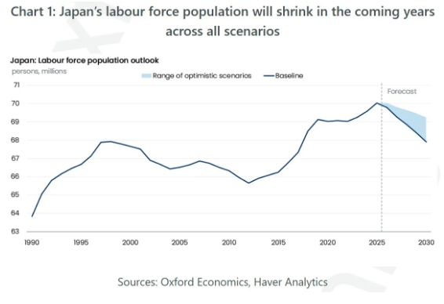
一句话核心
日本靠"让更多人出来工作"来抵消老龄化的招数已经用到头了，接下来劳动人口只能往下走——这会让日本央行加息（正常化）变得更纠结。
背景与关键数据
先把两个概念拆开，它们经常被混为一谈：
- 劳动年龄人口：15–64 岁的人有多少。这是"人头数"，由出生率决定，几十年前就锁死了。
- 劳动力人口（labour force）：真正在工作或在找工作的人有多少。= 劳动年龄人口 × 劳动参与率。
日本的"人头数"从 1990 年代就开始跌，但它靠把参与率往上提硬撑住了劳动力总量：安倍经济学（2013 年起）大力推"女性经济学"，把大量全职妈妈拉回职场；同时不断延后退休，65 岁以上还在上班的比例在发达国家里高得离谱（约 25%，美国大概 19%）。这就是所谓的"对冲"。
问题是，参与率有天花板——它不可能超过 100%，而日本女性和老人的参与率已经接近发达国家的极限。分母（人头）继续跌，分子（参与率）却提不动了，劳动力总量就必然掉头向下。
图片解读
图 1（Oxford Economics / Haver Analytics）：日本劳动力人口展望，单位百万人，纵轴 63–71。
- 1990 年从约 63.7 百万起步，1997 年冲到约 67.9 百万的第一个高点。
- 2000–2012 年一路下滑到约 65.6 百万——这是"人头数下降、参与率还没发力"的阶段。
- 2013 年之后（安倍经济学）掉头猛涨，一直爬到 2025 年约 70.0 百万的历史峰值。这一段就是"参与率对冲"的功劳，肉眼可见地把趋势掰回来了。
- 灰色虚线右侧是预测区：基准情景（深蓝线）到 2030 年跌回约 67.9 百万（5 年掉约 2 百万人，约 -3%）。浅蓝色阴影是"乐观情景区间"——注意，即使最乐观，2030 年也是低于 2025 年的。这就是标题里 "across all scenarios（无论哪种情景）"的含义。
关键信号：这张图的杀伤力在于"乐观情景也在跌"。它不是一个可以靠政策扭转的周期问题，而是一个已经写死的结构问题。
为什么重要 / 对市场和经济的含义
这条对日债、日元、全球利率都有直接影响。逻辑链条是这样的：
- **劳动力下降 = 潜在增长率下降。**一个国家能长期增长多快，粗略等于「劳动力增长 + 生产率增长」。日本劳动力现在要变成负数了，那么要维持哪怕 0.5% 的增长，生产率就得扛全部担子——这就是 Jason 说"越来越依赖 AI、自动化、外劳"的原因。
- *潜在增长率下降 = 中性利率（r）下降。**中性利率是"既不刺激也不压制经济"的那个利率水平。经济潜在增速越低，中性利率越低。
- **所以日本央行的加息空间天然很窄。**这就是"正常化路径存在博弈"的含义——日本央行想把利率从超低水平拉回正常，但结构性的低增长告诉它"正常"本来就很低。
- 但另一面：劳动力短缺本身会推高工资（人少了，抢人就贵），而工资上涨是通胀的核心燃料，这又逼着日本央行加息。
**两股力量方向相反，这就是"博弈"。对交易者的含义：日元和日债的路径会比教科书更反复无常，"日央行何时加息"这个交易会持续拉锯而不是单边突破。日债收益率的任何大幅上行，都会通过日元套息交易（carry trade）**的平仓，冲击全球风险资产——2024 年 8 月的全球暴跌就是这么来的。
延伸知识
① 人口红利与"人口负债" "人口红利"指劳动年龄人口占比上升的那段时期，抚养负担轻、储蓄率高、增长快——中国 1980–2010、日本 1950–1990 都吃过这个红利。红利吃完之后就是"人口负债"：干活的人少、要养的人多。日本是全世界第一个走完这条路的大型经济体，所以它是所有后来者（中国、韩国、南欧）的"预演片"。这也是为什么今天的帖 8（李迅雷谈中国人口）和这条帖子放在一起看特别有意思。
② 索洛增长模型的一句话版本 经济学里最经典的增长框架（Solow model）说：长期人均产出增长最终只由**技术进步（生产率）**决定，资本投入和劳动力投入都会遇到边际递减。日本现在被逼到的正是这个模型的墙角——劳动力这一项已经是负的，资本堆了三十年也堆不动了，只剩生产率一条路。这也是为什么日本政府和企业对 AI/机器人的热情是"生存需求"而不是"科技时髦"。可以延伸读一下"日本机器人密度全球第一"这类数据，你会发现它不是巧合。
帖 2 · 13:54 · #A股#
帖子原文
JPM：AI PCB行业会继续增长，但利润和份额会越来越集中到少数真正能量产高端产品的公司。
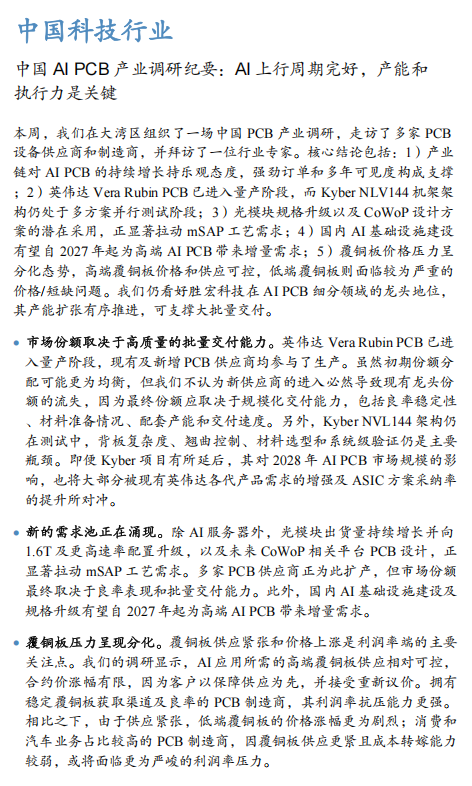
一句话核心
AI 服务器带火了 PCB（电路板），但这行的钱不是所有人都能赚——只有真正能"高良率、大批量"造出高端板的少数几家能拿走利润，其他人只是陪跑。
背景与关键数据
先解释术语：
- PCB（印制电路板）：就是电子设备里那块绿色的板子，所有芯片都焊在它上面，它负责在芯片之间传递信号。听起来很"低科技"，但 AI 服务器的 PCB 完全不是一回事。
- 为什么 AI 让 PCB 变高端：GPU 之间的数据传输速度极快（几十 Gbps），信号在板子里跑一点点损耗就会出错。所以 AI 服务器要用高层数（20 层以上）、超低损耗材料的板子，还要做得极薄极平。这就把 PCB 从"白菜生意"变成了"良率生意"。
- 覆铜板（CCL）：PCB 的原材料——一层铜箔压在绝缘树脂上。它是 PCB 的上游，高端 CCL（低损耗、高频高速）全球产能高度集中（生益科技、松下、罗杰斯等）。
图里的核心结论（JPM 大湾区 PCB 产业调研）：
- 英伟达 Vera Rubin 的 PCB 已进入量产爬坡阶段；而 Kyber NVL144 机架架构还在多方案并行测试。
- 光模块规格升级 + CoWoP 设计方案正在推动 mSAP 工艺需求。
- 国内 AI 基础设施建设从 2027 年起带来增量需求。
- 覆铜板供应压力呈两极分化：高端覆铜板价格和供应可控，低端覆铜板反而面临更严重的价格/短缺问题——这个反常识，下面详说。
图片解读
图 1（JPM《中国 AI PCB 产业调研纪要》）：一页纯文字的研报摘要，三个要点用蓝色圆点列出。
- 要点一「市场份额取决于高质量的批量交付能力」：直白说就是——新玩家进来了不代表能抢到份额。英伟达 Vera Rubin PCB 已进入量产阶段，现有 + 新增供应商都参与了生产，"虽然初期份额分配可能更为均衡，但我们不认为新供应商的进入必然导致现有龙头份额的流失"。瓶颈在背板复杂度、翘曲控制、材料选型和系统验证——这些是工程 know-how，不是砸钱建产线就能解决的。这是本帖最核心的一句话。
- 要点二「新的需求池正在涌现」：除 AI 服务器外，光模块出货量持续增长并向 1.6T 及更高速率配置升级；CoWoP 相关平台 PCB 设计、mSAP 工艺扩产；国内 AI 基建 2027 年起带来增量。翻译：需求不止一个来源，赛道纵深比想象的长。
- 要点三「覆铜板压力呈现分化」：高端覆铜板供应相对可控（大厂有稳定取货渠道和良率），低端覆铜板价格涨幅更剧烈——因为供应紧张但下游是消费类/汽车类 PCB 制造商，转嫁能力较弱，所以利润被上游挤压。
这张图传达的信号：AI PCB 是"结构性行情"不是"普涨行情"。同样是 PCB 股，龙头在扩利润，低端在被上游吃掉利润，方向是相反的。
为什么重要 / 对市场和经济的含义
这条对 A 股/港股的 PCB 板块是一个降温 + 指路的双重信号：
- 降温：市场往往把"AI PCB 需求爆发"简单理解成"所有 PCB 公司都受益"，然后无差别炒作。JPM 明确说不是——新进入者拿不走龙头的份额，因为门槛在工艺良率而不是产能。
- 指路：真正该看的指标不是"接了多少订单"，而是"能不能高良率地量产出来"。翘曲控制、材料选型、系统验证过关的公司才是赢家。
- 风险点：做低端板、消费电子/汽车 PCB 的公司，会在这轮覆铜板涨价里被双向挤压（成本涨、售价传导不出去），可能是这轮 AI 行情里"看着沾边、实际受害"的一类。
结合帖 3（JPM 说 A 股 AI/半导体/科技硬件估值已极端拥挤），今天 JPM 的两条其实是同一套话术：行业是真的，但股价已经把"所有人都赢"给定价进去了，而现实是只有少数人赢。
延伸知识
① "卖铲子的人"要看是哪把铲子 淘金热里"卖铲子的人赚钱"是句老话，但它有个隐含前提：铲子得是别人造不出来的铲子。如果铲子谁都能造，卖铲子的会陷入价格战，比淘金还惨。AI 产业链现在正在做的事，就是把"谁的铲子是别人造不出来的"这个问题一层层筛出来——GPU（英伟达）、HBM（SK 海力士/美光）、先进封装（台积电 CoWoS）都是"别人造不出来"，而普通 PCB、普通服务器组装就是"谁都能造"。本帖说的就是：高端 AI PCB 正在被划到"别人造不出来"那一栏，低端则被划到另一栏。
② 良率（yield）为什么是护城河 制造业里最反直觉的一件事：同样的设备、同样的材料、同样的图纸，不同厂的良率可能差 20–30 个百分点。差异来自成千上万个说不清道不明的工艺参数（温度曲线、压合时间、除气节奏），这些只能靠年复一年的量产数据"喂"出来。这就是为什么"新供应商进入"很少能立刻抢走份额——**他们进来了，但良率不够，成本就高，报价就没优势，客户不敢把关键订单给他们。**你可以拿这个逻辑去看半导体、面板、动力电池，几乎都适用。
帖 3 · 13:58 · #A股#
帖子原文
JPM：中国市场的成长和动量行情仍可能继续，但领涨已经过度集中于AI、半导体和科技硬件，估值差距达到极端水平，因此热门股的风险收益比开始恶化。我们建议当前AI、半导体、科技硬件等高估值成长股交易已经非常拥挤，投资者应继续保留部分成长和动量敞口，但同时增加低波动、高质量、高股息的大盘价值股作为对冲。
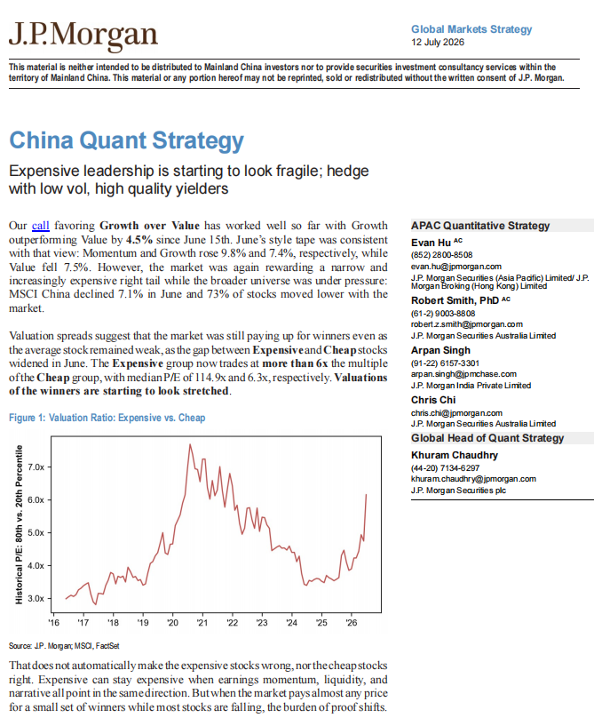
一句话核心
成长股还能涨，但已经贵到"错一点就很痛"的程度——JPM 建议别下车，但要买保险（低波动 + 高股息价值股）。
背景与关键数据
摩根大通《China Quant Strategy》（2026年7月12日），副标题直白："Expensive leadership is starting to look fragile; hedge with low vol, high quality yielders"（贵的龙头开始显得脆弱，用低波动、高质量、高股息品种对冲）。
报告里的硬数据：
| 指标 | 数值 |
|---|---|
| 6月15日以来 Growth 跑赢 Value | +4.5% |
| 6月 Momentum 涨幅 | +9.8% |
| 6月 Growth 涨幅 | +7.4% |
| 6月 Value 跌幅 | −7.5% |
| 6月 MSCI China | −7.1% |
| 6月下跌股票占比 | 73% |
| "贵组" 中位数 P/E | 114.9倍 |
| "便宜组" 中位数 P/E | 6.3倍 |
| 估值比（贵/便宜） | >6倍，10年区间的极高位 |
先把术语说清楚：
- Growth（成长）/ Value（价值）：把全市场股票按估值排序，贵的、高增长预期的叫成长；便宜的、稳定的叫价值。
- Momentum（动量）：过去涨得好的继续买。这是量化里最经典也最危险的因子——顺风时非常爽，转向时踩踏最惨。
- 估值差（valuation spread）：贵组的市盈率 ÷ 便宜组的市盈率。这个比值本身比"市场整体贵不贵"更有信息量，因为它测量的是市场内部的分化程度。
图片解读
图 1 上半部分（正文）：讲了一个很关键的反差——
"the market was again rewarding a narrow and increasingly expensive right tail while the broader universe was under pressure: MSCI China declined 7.1% in June and 73% of stocks moved lower with the market."
翻译：6 月 MSCI 中国跌了 7.1%，73% 的股票在跌——但 Momentum 和 Growth 因子还涨了 9.8% 和 7.4%。这意味着什么？意味着只有极少数股票在涨，而且涨得极猛，猛到把整个因子的收益都撑起来了。这在专业术语里叫"市场宽度（breadth）恶化"——指数或因子的表现，越来越依赖越来越少的几只股票。
图 1 下半部分（Figure 1: Valuation Ratio: Expensive vs. Cheap）：折线图，纵轴是 "Historical P/E: 80th vs. 20th Percentile"（第80百分位股票的市盈率 ÷ 第20百分位股票的市盈率），纵轴范围 3.0x–7.0x，横轴 2016–2026。
- 2016–2018：在 3.0x–4.0x 之间横盘——市场内部的贵贱差距很小，很"健康"。
- 2019 年开始上行，2020–2021 年（核心资产/茅指数泡沫期）冲到 7.0x 以上的历史极值。
- 2021–2024 年一路回落，2024 年跌回约 3.0x（就是那轮"什么都不涨、只有红利股活着"的漫长熊市）。
- 2025–2026 年再度飙升，最右端已经冲到约 6.0x+，而且斜率非常陡。
这张图的信号极其清楚：现在的贵贱分化程度，已经逼近 2021 年"茅指数泡沫"的水平了。而 2021 年之后发生了什么，A 股投资者都记得。
图下的那句话是全篇最有分量的：
"That does not automatically make the expensive stocks wrong, nor the cheap stocks right. Expensive can stay expensive when earnings momentum, liquidity, and narrative all point in the same direction. But when the market pays almost any price for a small set of winners while most stocks are falling, the burden of proof shifts."
大白话：贵不等于错，便宜不等于对。当盈利、流动性、叙事三者同向时，贵可以一直贵下去。但当市场愿意为极少数赢家付出几乎任何价格、而大多数股票在跌的时候，举证责任就翻转了——不再是"你凭什么说它贵"，而是"你凭什么说它还能涨"。
为什么重要 / 对市场和经济的含义
这是今天 10 条帖子里对操作最有直接指导意义的一条。JPM 给的不是"清仓跑路"，而是一个非常职业的建议：Barbell（杠铃策略）。
- 一头：保留成长和动量敞口——因为趋势还在，earnings momentum 还在，硬砍掉是跟趋势作对，而且"贵可以更贵"。
- 另一头：加低波动 + 高质量 + 高股息的大盘价值股——这些东西在成长股崩的时候会成为资金的避风港（2022 年、2024 年的红利股行情就是这么来的）。
**为什么不直接空成长股？**因为泡沫的顶部不可预测，逆势做空动量是量化界公认的送命题。杠铃的精妙之处在于：它不需要你预测拐点，它只需要你在两边都有仓位，让拐点来临时的损失被另一边对冲掉一部分。
风险收益比（risk/reward）恶化是什么意思：不是"要跌了"，而是"再涨 10% 的可能性 vs 跌 30% 的可能性，这个赔率变差了"。一个赌局赔率变差，但你还是可以下注——只是要下更小的注，或者同时买保险。这就是本帖的全部意思。
延伸知识
① 市场宽度（Market Breadth）—— 顶部最经典的预警信号 健康的牛市是"大家一起涨"；危险的牛市是"少数人涨、多数人跌，但指数还在新高"。后者叫宽度背离。2000 年纳斯达克顶部、2021 年 A 股核心资产顶部、2021 年美股 FAANG 顶部，都出现过这个特征。可以关注的具体指标：上涨家数 vs 下跌家数（A/D line）、等权指数 vs 市值加权指数的比值。当等权指数（大家平均表现）明显跑输市值加权指数（巨头表现）时，就是宽度在恶化。今天 JPM 说的"73% 股票在跌但因子在涨"，就是这个现象的一个精确表述。
② 拥挤交易（Crowded Trade）为什么危险 一个交易变得拥挤，意味着所有想买的人都已经买了。这时候即使基本面没有任何变化，也没有新的边际买盘了——价格失去了上涨的燃料。更糟的是，当所有人持有同一批股票，任何一个人开始卖，其他人就会看到亏损，然后一起卖，形成踩踏。这就是为什么"共识越强，反转越猛"。判断拥挤度的实用指标：估值差（本帖的图）、融资余额集中度、卖方一致评级分布、基金重仓股占比。当这些指标同时打到极值，就该开始想"如果我错了，我怎么出来"。
帖 4 · 14:02 · #TAX#
帖子原文
小红书薯友：刀口舔血
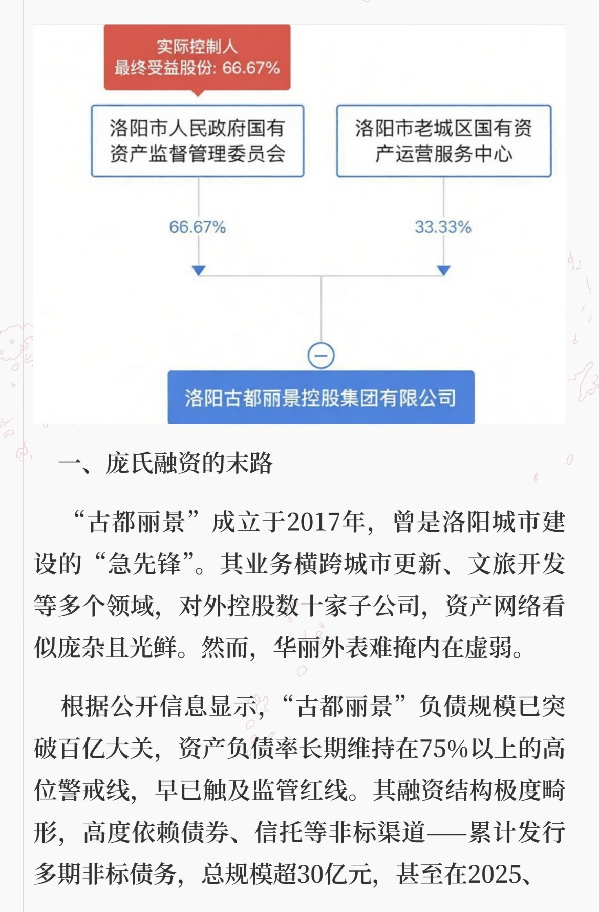
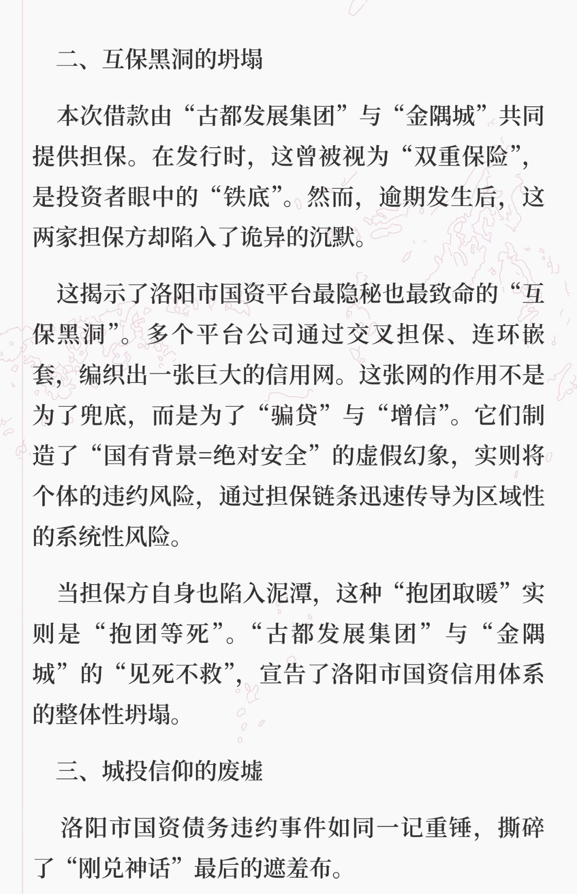
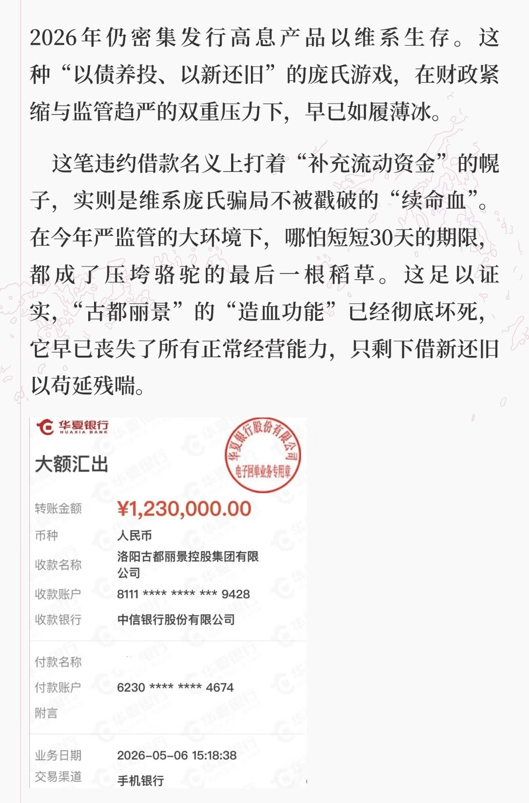
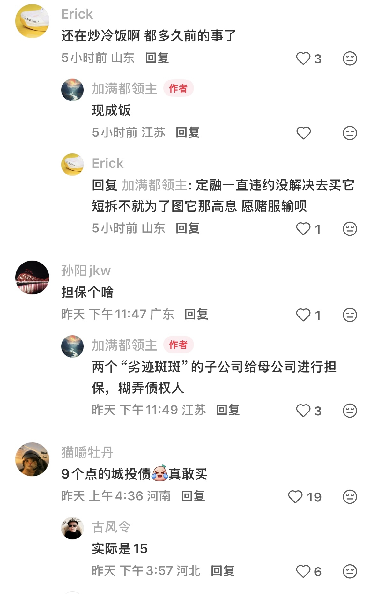
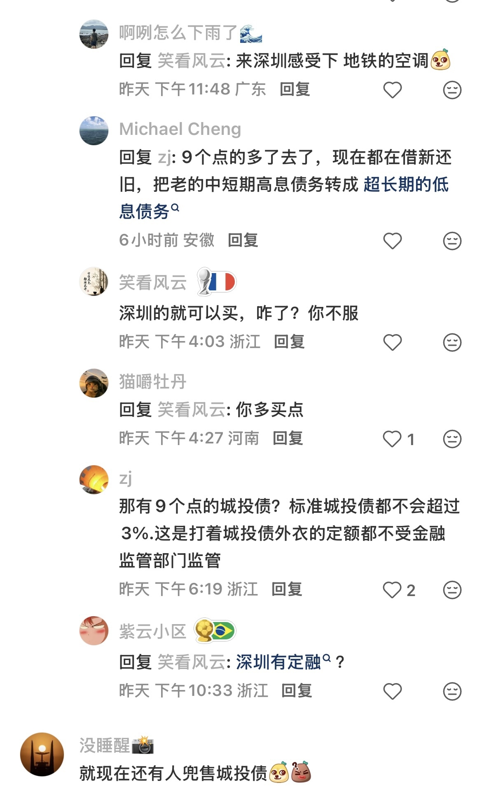
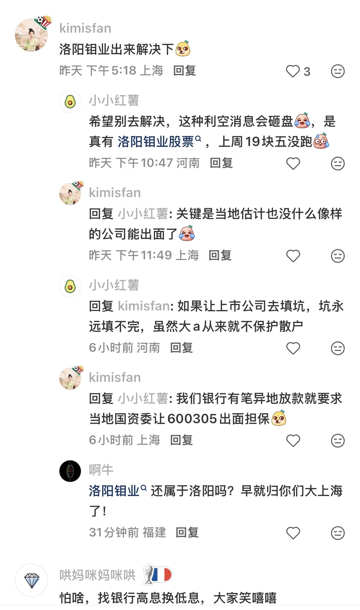
一句话核心
洛阳市属城投平台"古都丽景"违约了，而且是短短 30 天期限的短期拆借都还不上；更致命的是，两家国资担保方直接装死不认——"城投信仰"的最后一块遮羞布被撕了。Jason 用"刀口舔血"四个字形容那些还在买 9%、甚至 15% 息城投定融的人。
背景与关键数据
先把"城投"讲明白。中国的地方政府不能直接大规模发债（预算法限制），所以从 2008 年起，各地成立了大量"城市建设投资公司"（城投平台）——名义上是企业，实际上是政府的融资马甲。它们借钱去修路、盖楼、建景区，然后用卖地的钱还债。这套模式在房价上涨、土地拍卖火爆的年代运转得很好。
**"城投信仰"是什么？**投资者相信：城投虽然是企业，但背后是政府，政府不会让它违约（怕影响整个地区的融资能力）。所以哪怕城投的财务报表烂得一塌糊涂，大家还是敢买它的债——买的不是公司，是"政府会兜底"这四个字。这就叫"刚兑信仰"。
这次的事实链条（来自图片）：
| 项目 | 内容 |
|---|---|
| 违约主体 | 洛阳古都丽景控股集团有限公司（成立于 2017 年） |
| 股权结构 | 洛阳市国资委持股 66.67%，洛阳市老城区国有资产运营服务中心持股 33.33%（100% 国资） |
| 负债规模 | 突破百亿元，资产负债率长期 75% 以上 |
| 非标债务 | 累计发行多期，总规模超 30 亿元 |
| 违约的这笔 | 期限仅 30 天（短期拆借），金额约 123 万元（银行回单显示 ¥1,230,000.00，2026-05-06 汇出） |
| 担保方 | "古都发展集团" + "金隅城"（两家洛阳国资平台） |
| 担保方反应 | 陷入"诡异的沉默"，见死不救 |
| 票面利率 | 评论区说是 9%，甚至有人说"实际是 15"（对比：标准城投债不超过 3%） |
"定融"是什么？全称"定向融资计划"，是一种在地方金交所备案的非标准化债权——不受证监会/银保监会监管，本质上是城投绕开正规渠道（银行贷款、公开债券）向散户高息借钱。评论区那位 zj 说得最准：
"那有 9 个点的城投债？标准城投债都不会超过 3%。这是打着城投债外衣的定额，都不受金融监管部门监管。"
这就是本帖的核心讽刺：能给到 9%–15% 利息的"城投债"，根本不是城投债，而是包装成城投债的高息非标。而"去码头整点"那条 15 赞的评论一针见血：
"这个不是城投债，是城投短期拆借，可见城投缺钱缺到啥地步了。"
图片解读
图 3（股权结构图）：清晰展示"古都丽景"是 100% 国资——洛阳市国资委 66.67% + 老城区国资运营中心 33.33%。这张图的作用是证明"这不是私企跑路，这是根正苗红的国资平台赖账"，正因如此才有信仰崩塌的杀伤力。
图 1（"二、互保黑洞的坍塌"）：解释这次违约最恶劣的地方——两家担保方在发行时被当作"双重保险""铁底"，出事后集体沉默。原文的定性极重：
"多个平台公司通过交叉担保、连环嵌套，编织出一张巨大的信用网。这张网的作用不是为了兜底，而是为了'骗贷'与'增信'。它们制造了'国有背景=绝对安全'的虚假幻象，实则将个体的违约风险，通过担保链条迅速传导为区域性的系统性风险。"
**关键概念：交叉担保（互保）。**A 给 B 担保，B 给 C 担保，C 又给 A 担保。看起来每笔债都有担保，实际上整个圈子没有一分钱新增的偿付能力——大家都在为彼此的空气背书。这就是"抱团取暖实则是抱团等死"。一旦有一家倒，担保链会把风险瞬间传给所有人。
图 2（"庞氏融资的末路" + 银行回单）：上半段文字点出"以债养投、以新还旧"的庞氏结构，下半段是华夏银行的大额汇出回单——转账 ¥1,230,000.00，收款方"洛阳古都丽景控股集团有限公司"，收款银行中信银行，业务日期 2026-05-06 15:18:38。
这张回单是全帖最有杀伤力的实证：它是投资人自己的打款凭证，证明"我真的把钱借给它了，而且它真的没还"。123 万这个数字之小，恰恰是最恐怖的地方——一个负债过百亿的市级国资平台，连 123 万的 30 天拆借都还不上。原文说得好：
"哪怕短短 30 天的期限，都成了压垮骆驼的最后一根稻草。这足以证实，'古都丽景'的'造血功能'已经彻底坏死。"
图 4–8（小红书评论区）：这五张是舆论切片，信息密度其实很高：
- "9 个点的城投债 😭 真敢买"（19 赞） / "实际是 15"（6 赞）——揭示了真实利率水平。
- "这个不是城投债，是城投短期拆借，可见城投缺钱缺到啥地步了"（15 赞）——最专业的一条。
- "城投为啥不去银行贷款啊" → "银行也会贷，但是额度用完了，资质差的压根很难从银行贷到" / "窟窿太大，不够填坑的，银行不傻，只能骗骗老百姓"——这条问答链是理解整件事的钥匙：城投走到发高息定融这一步，说明银行已经不给它续了。银行是最了解借款人真实财务状况的机构，当银行退出、散户接盘时，就是击鼓传花的最后一棒。
- "现在都在借新还旧，把老的中短期高息债务转成超长期的低息债务"——描述的是"化债"的常规操作（展期降息）。
- "洛阳钼业出来解决下" → "如果让上市公司去填坑，坑永远填不完"——指向一个真实风险：地方政府可能施压当地优质上市公司（如洛阳钼业 603993/03993）为城投兜底，这会伤害上市公司股东利益。其中一条评论透露："我们银行有笔异地放款就要求当地国资委让 600305 出面担保"——说明这种施压是行业惯例，不是猜测。
- 加满都领主（作者）："洛阳城投躺平装死，死猪不怕开水烫" —— 这是原博主自己的定性。
- "地方公共财政早已无法三保，土地财政无以为继，空置的商业楼、空置的标准厂房、空空的景区、空空的科创中心，财务数据就剩债务是真的了"（9 赞）——这条把"资产端造假、负债端真实"这个城投的核心病灶讲透了。
- "三保"：保基本民生、保工资、保运转——地方政府财政支出的最低底线。连三保都困难，意味着财政已经到了极限。
- "哪个投资人都不傻，都在赌自己不是最后接盘的"（3 赞）——这就是庞氏骗局的心理学基础，值得单独记住。
为什么重要 / 对市场和经济的含义
**这是今天最重要的一条中国宏观信号。**理由：
- **"城投信仰"是中国金融体系的一根隐性支柱。**中国城投的存量债务规模在 60–70 万亿人民币量级（含隐性债务），这个数字是巨大的。这个市场之所以能存在，全靠"政府会兜底"这个信念。信念一旦破裂，整个板块的融资成本会瞬间跳升，再融资链条会断——这就是所谓的"信用重定价"。
- 担保方装死是质变，不是量变。过去几年城投违约（主要是非标）时有发生，但通常会被"协调兑付"（政府出面、金融机构展期）。这次两家国资担保方公开沉默，等于地方政府默认了不再兜底。这是一个态度的转变——它可能反映的是地方财政真的没钱了，而不是"不想给"。
- 它把风险从"地方"传导到"全国"。投资者会开始重新审视所有弱资质地区的城投债——不只是洛阳。这会导致弱区域城投的发行利率飙升、发不出去，进一步加剧财政困难，形成负反馈螺旋。
- 对资产价格的含义：
- 中国的信用利差（城投债 vs 国债）会走扩，尤其是弱区域。
- 国债和高等级信用债受益（避险资金流入）——这也部分解释了中国长债收益率为什么一直下不来。
- 与本地城投有业务往来的银行、建筑、地产链面临坏账风险重估。
- 当地优质上市公司（如洛阳钼业）面临"被要求兜底"的治理风险折价。
Jason 打上 #TAX# 标签的深意：他把这条归到"税"，因为城投违约的终局是财政问题——不是钱还得上还不上，而是"未来靠什么收钱"。土地财政没了，就必须找到新的税源。评论区那句"收房产税和遗产税吧"，正是这个逻辑的自然终点。
延伸知识
① 明斯基时刻（Minsky Moment）—— 三种融资结构 经济学家 Hyman Minsky 把借钱的人分成三类：
| 类型 | 定义 | 现实例子 |
|---|---|---|
| 对冲性融资（Hedge） | 经营现金流足够还本 + 付息 | 健康的公司 |
| 投机性融资（Speculative） | 现金流只够付息，本金要靠借新还旧 | 大部分城投的前几年 |
| 庞氏融资（Ponzi） | 连利息都要靠借新的钱来付 | 现在的古都丽景 |
Minsky 的核心洞察是：在繁荣期，经济体会自发地从第一类滑向第三类——因为大家看到别人加杠杆赚钱，就都跟着加。而当庞氏融资的比例足够高时，只要有任何一个环节借不到新钱，整个链条就会瞬间崩塌——这个瞬间就叫"明斯基时刻"。
本帖描述的正是一个教科书级的明斯基时刻：一个负债百亿的主体，需要靠 9–15% 的高息、30 天期限的短期拆借来"续命"。它连利息都在靠新债支付——这已经是纯粹的庞氏融资。当银行断供（"额度用完了""银行不傻"），最后一根稻草就来了。
② 隐性担保（Implicit Guarantee）的定价陷阱 "隐性担保"指没有写在合同里、但市场普遍相信存在的政府兜底。它有一个致命的性质：它没有价格，因为它不存在于任何合同中——所以你无法为它索取补偿，也无法在它消失时向任何人索赔。
这就产生了一个诡异的现象：**隐性担保越被相信，风险定价就越失真。**投资者以为"9% 的利息 + 政府兜底"是天上掉馅饼，实际上市场给出 9% 的利率本身，就已经在告诉你"这东西的真实违约概率很高"——利率是市场对风险最诚实的报价，比任何"信仰"都诚实。
**记住这条通用法则：当一个资产的收益率显著高于同类，市场不是在给你送钱，而是在给你标价风险。**没有例外。评论区那句"愿赌服输呗"，说的就是这个道理。
③ 中国的化债路径 面对这个局面，中国的政策工具箱大致有三个选项：
- 展期降息（评论提到的"把中短期高息债务转成超长期低息债务"）——本质是用时间换空间，不解决问题但拖住问题。这是目前的主流做法（2024 年起的大规模化债方案）。
- 中央转移支付 / 特别国债置换——把地方债务转移到中央资产负债表。中央政府的负债率相对低，有空间。
- 让部分平台真正违约、市场出清——痛，但能重建信用定价。今天这条帖子，可能就是第三条路径在局部悄悄发生的信号。
值得关注的延伸问题：**如果"城投信仰"真的破了，那 60 万亿的存量债务怎么处理？**这是未来 5–10 年中国宏观最大的变量之一，值得持续跟踪。
帖 5 · 14:12 · #其他国家经济#
帖子原文
zerohedge：美军第三轮向科威特、巴林、卡塔尔、约旦和阿曼的美国关联目标发射弹道导弹和无人机。
（注：原文表述有歧义，从配图内容看，实际是伊朗向这些海湾国家的美国关联目标发射导弹和无人机，作为对美军第三轮空袭伊朗的报复。）
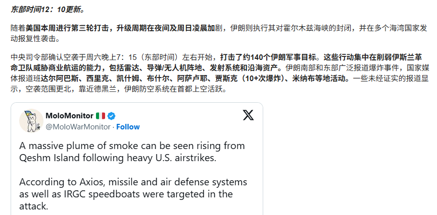
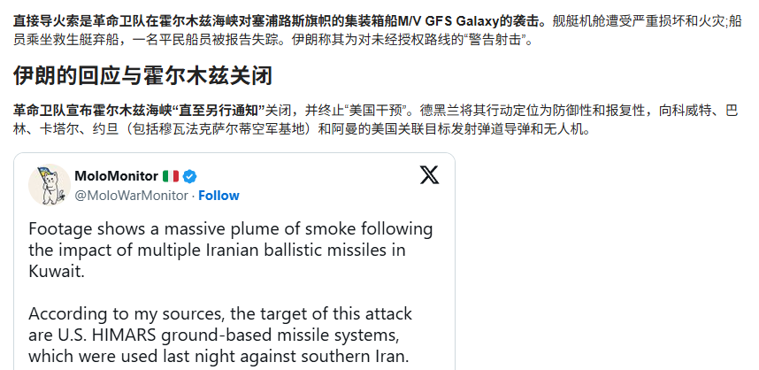
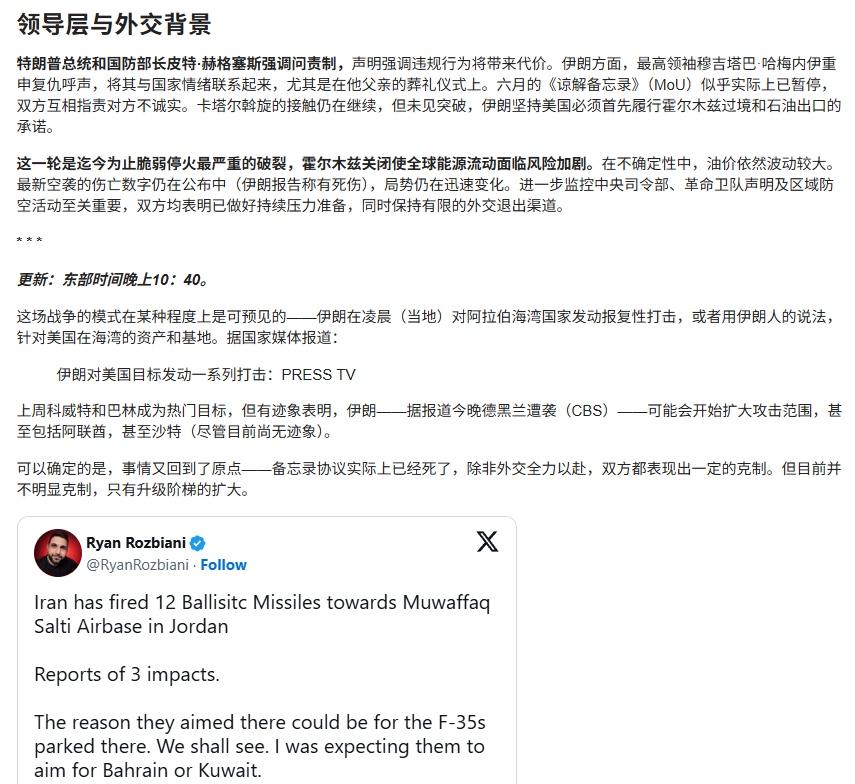
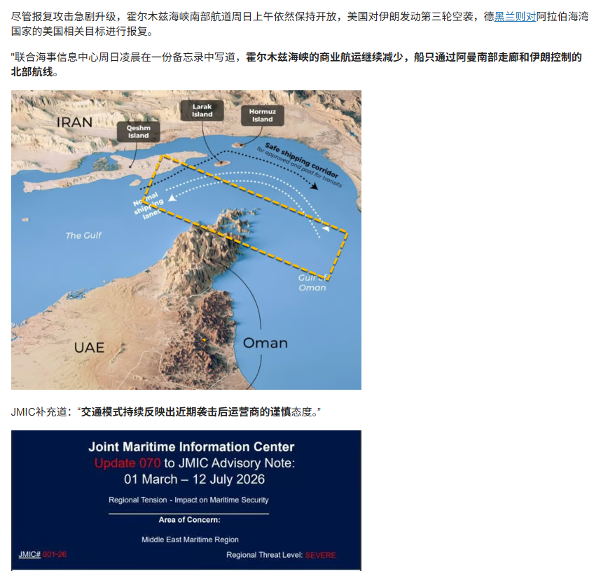
一句话核心
**美伊冲突已经升级到"互射弹道导弹"的阶段，伊朗宣布关闭霍尔木兹海峡，六月的停火备忘录（MoU）实际上已经死了。**这是本轮冲突迄今为止最严重的破裂。
背景与关键数据
**霍尔木兹海峡（Strait of Hormuz）是什么？**波斯湾通往阿拉伯海的唯一出口，最窄处仅约 21 海里（39 公里）。**全球约 20% 的石油、约 20% 的 LNG 都要从这里过。**沙特、阿联酋、科威特、卡塔尔、伊拉克、伊朗的原油出口全部依赖它。北岸就是伊朗——这就是伊朗手里最大的一张牌：它有能力关闭全球能源的咽喉。
事件时间线（来自图片）：
| 时间 | 事件 |
|---|---|
| 六月 | 美伊签署《谅解备忘录》（MoU），冲突暂时降温 |
| 周六晚 7:15（东部时间） | 中央司令部确认第三轮空袭开始，打击约 140 个伊朗军事目标 |
| — | 打击集中在削弱伊斯兰革命卫队（IRGC）威胁商业航运的能力：雷达、导弹/无人机阵地、发射系统、沿海资产 |
| — | 报道爆炸地点：班达尔阿巴斯、西里克、凯什姆、布什尔、阿萨卢耶、贾斯克（10+ 次爆炸）、米纳布 |
| 直接导火索 | 革命卫队在霍尔木兹海峡对塞浦路斯旗帜的集装箱船 M/V GFS Galaxy 发动袭击，舰艇机舱严重损坏起火，一名平民船员失踪。伊朗称其为对"未经授权路线"的"警告射击" |
| 伊朗反应 | 革命卫队宣布霍尔木兹海峡"直至另行通知"关闭，并终止"美国干预" |
| 伊朗报复 | 向科威特、巴林、卡塔尔、约旦（含穆瓦法克·萨尔蒂空军基地）、阿曼的美国关联目标发射弹道导弹和无人机 |
| 晚 10:40 更新 | 伊朗可能扩大攻击范围，甚至包括阿联酋、沙特（目前尚无迹象）；德黑兰今晚遭袭（CBS） |
关键定性（原文）：
"这一轮是迄今为止脆弱停火最严重的破裂，霍尔木兹关闭使全球能源流动面临风险加剧。" "事情又回到了原点——备忘录协议实际上已经死了，除非外交全力以赴，双方都表现出一定的克制。但目前不明显克制，只有升级阶梯的扩大。"
图片解读
图 1（东部时间 12:10 更新）：叙述第三轮打击的规模——约 140 个伊朗军事目标，覆盖伊朗南部和东部。嵌入的 X 推文（@MoloWarMonitor）：Qeshm Island（凯什姆岛，正好在霍尔木兹海峡口）升起巨大烟柱，据 Axios，被打击的是导弹和防空系统、以及革命卫队的快艇。
凯什姆岛的地理意义：它是伊朗控制霍尔木兹海峡的前哨基地。美军优先打这里，说明美军的首要目标就是摧毁伊朗封锁海峡的物理能力。
图 2：交代导火索——革命卫队袭击集装箱船 M/V GFS Galaxy（塞浦路斯旗）。嵌入推文：科威特境内多枚伊朗弹道导弹命中，据消息源，目标是美军的 HIMARS 陆基导弹系统（前一晚被用于打击伊朗南部）。
注意这个细节：伊朗打的是"打过我的武器系统"，是精确的对等报复，不是无差别攻击。这说明伊朗在控制升级的烈度——它在报复，但试图不给美国"全面开战"的口实。
图 3：外交层面。特朗普总统和国防部长皮特·赫格塞斯强调问责制，声明违规行为将带来代价；伊朗最高领袖穆吉塔巴·哈梅内伊（注：图中如此表述）有复仇呼声，尤其在其父亲的葬礼仪式上。六月的 MoU"似乎实际上已暂停"，双方互指对方不诚实。卡塔尔斡旋仍在继续，但未见突破；伊朗坚持美国必须先履行霍尔木兹过境和石油出口的承诺。
嵌入推文（@RyanRozbiani）：伊朗向约旦的 Muwaffaq Salti 空军基地发射了 12 枚弹道导弹，报道有 3 次命中。推测原因是"那里停着 F-35"。
约旦的 Muwaffaq Salti 基地是美军在中东的关键空军基地之一。打这里，且瞄准 F-35，是在打击美国最昂贵的军事资产——这是一次显著的升级。
图 4（最重要的一张，含航运地图）：
"尽管报复攻击急剧升级，霍尔木兹海峡南部航道周日上午依然保持开放。"
联合海事信息中心（JMIC）周日凌晨备忘录："霍尔木兹海峡的商业航运持续减少，船只通过阿曼南部走廊和伊朗控制的北部航线。""交通模式持续反映出近期袭击后运营商的谨慎态度。"
地图解读（卫星地图，标注了 IRAN / Qeshm Island / Larak Island / Hormuz Island / The Gulf / Oman / UAE / Gulf of Oman）：
- 黄色虚线框：划出了一片高风险区域，正好覆盖海峡最窄处。
- 白色虚线箭头（"Normal shipping lanes"）：正常航道——紧贴伊朗一侧，从海湾直接穿出。
- 黑色虚线箭头（"Safe shipping corridor for approved and paid for transits"）："经批准并付费通行的安全航运走廊" ——绕道阿曼一侧的南部走廊。
⚠️ 这条注释是整张图最有信息量的地方。"approved and paid for"（经批准并付费）意味着什么？意味着伊朗事实上正在对通过霍尔木兹的船只收"过路费"或要求"通行许可"。这不是全面封锁，而是把海峡变成了一个收费站——一个由革命卫队控制的、有选择性的通行机制。
JMIC 通告框（深蓝色）：Update 070，覆盖期 2026年3月1日 – 7月12日，Area of Concern: Middle East Maritime Region，Regional Threat Level: SEVERE（严重）。
JMIC = Joint Maritime Information Center，由多国海军联合运营，为商船提供威胁通告。它把区域威胁级别定为 SEVERE，是给全球航运和保险业的正式警报——这会直接反映到战争险保费上。
为什么重要 / 对市场和经济的含义
这条对全球资产的传导路径最短、最猛。
1. 原油 霍尔木兹的任何实质性中断，都是供给侧的极端冲击。这不是"需求波动"，是"供给消失"。历史参照：1973 年石油禁运（油价 4 倍）、1979 年伊朗革命（油价 2.5 倍）。但要注意的是，图 4 明确说航道"周日上午依然保持开放"——伊朗宣布"关闭"，实际执行的是"选择性收费通行"。这个区别至关重要：
- 如果只是"收费通行" → 油价上涨的是风险溢价（保险费、绕道成本、囤货需求），幅度可能是 10–30%。
- 如果真的物理封锁 → 油价上涨的是实际短缺，幅度可能是 100%+。
目前是前者。但市场会为"可能变成后者"定价。
2. 通胀与央行 油价冲击是典型的供给侧通胀（cost-push inflation），它有一个非常讨厌的性质：它同时推高通胀、压低增长——也就是"滞胀"。这让央行陷入死局：
- 加息压通胀 → 本来就弱的经济更弱。
- 降息保增长 → 通胀更失控。
1970 年代美联储就是在这个死局里挣扎了十年。所以中东升级最坏的市场影响，不是"油价涨了"，而是"央行没法救市了"。
3. 具体资产的方向
- 多：原油、天然气（尤其欧洲 TTF）、黄金、美元（避险）、油运（VLCC 运价会飙）、国防军工。
- 空：航空（燃油成本 + 空域关闭）、消费（油价挤压可支配收入）、新兴市场（能源进口国、货币贬值）、高估值成长股（贴现率上升 + 风险偏好下降）。
- 特别注意：中国、印度、日本、韩国是霍尔木兹原油的最大买家。这条对亚洲的伤害远大于对美国的伤害（美国是能源净出口国）。这也是为什么它对 A 股/港股的杀伤力值得单独考虑。
4. 与今天其它帖的联动
- 帖 7（沙特-阿联酋裂痕）：中东内部本来就在分裂，现在又叠加外部战争，中东作为"稳定能源供应商"的信誉正在瓦解。
- 帖 3（JPM 说成长股拥挤）：地缘风险正是"拥挤交易"最怕的那种外生冲击——它不看你的基本面，直接把风险偏好打下去。
延伸知识
① 石油的"风险溢价" vs "实际短缺" 油价 = 基本面价格（供需平衡决定） + 风险溢价（对未来中断的恐惧）。
这两者的行为完全不同：
- 风险溢价来得快、去得也快——一旦紧张局势缓和，它会在几天内蒸发。所以"地缘冲突买油"是一个短周期、高胜率但容易被打脸的交易。做多容易，平仓的纪律才是关键。
- 实际短缺则会持续重塑价格中枢——它会改变整个远期曲线（futures curve），把市场推向 backwardation（近月价格高于远月），因为"现在就要油"。
**实用技巧：观察远期曲线的形状，比观察现货价格更能判断这是"恐慌"还是"真短缺"。**如果只是恐慌，近月涨、远月不动；如果是真短缺，整条曲线会一起上移且近月更陡。
② 为什么伊朗"关闭"霍尔木兹是一把双刃剑 一个反直觉的事实：伊朗自己也要靠霍尔木兹出口石油（伊朗石油出口占其财政收入的大头，主要卖给中国）。彻底封锁海峡等于掐死自己的财政。
而且，海峡的最大用户是中国（占中国原油进口的很大比例）。伊朗如果真的长期封锁，会得罪它唯一的重要买家和外交盟友。
所以，"关闭霍尔木兹"这个牌，伊朗的真实用法从来不是全面封锁，而是：
- 制造不确定性、推高油价（伊朗自己作为石油出口国是油价上涨的受益者）；
- 把海峡变成收费站（图 4 那条 "approved and paid for" 的走廊，正是这个策略的实证）；
- 给谈判增加筹码（原文明确说"伊朗坚持美国必须先履行霍尔木兹过境和石油出口的承诺"）。
**理解这一点，你就能理解为什么市场对"霍尔木兹关闭"的反应，往往比新闻标题暗示的要温和。**看行动，不看宣言——图 4 里"航道依然开放"这一行小字，比"宣布关闭"四个大字更值钱。
③ "升级阶梯"（Escalation Ladder） 冷战时期核战略家 Herman Kahn 提出的概念：冲突不是"和平 or 战争"的二元开关，而是一个有很多级台阶的梯子——从外交抗议、经济制裁、代理人冲突、有限军事打击、常规战争、一直到核战。
**双方都在梯子上试探对方的反应，同时避免跳级。**今天的帖子里，伊朗的行为高度符合这个模型：
- 打科威特的 HIMARS（打过我的那个系统）——精确对等。
- 打约旦的 F-35 停机坪——升级一档，但仍是军事目标。
- 暂不打阿联酋和沙特（原文："甚至包括阿联酋、甚至沙特（尽管目前尚无迹象）"）——留着不跳这一级，因为那会把整个海湾拖进战争。
原文那句"目前不明显克制，只有升级阶梯的扩大"是全篇最令人担忧的判断——它的意思是：双方都还在梯子上按部就班地往上爬，但没人在往下走。对市场而言，这意味着风险溢价短期内不会消退。
帖 6 · 14:15 · #TAX#
帖子原文
华源：文旅部《旅游强国建设"十五五"规划》，提出到 2030 年，国内居民出游人次有望达到 83 亿，国内出游总花费有望达到 7.7 万亿元，入境旅游人次有望达到 1.9 亿、总花费有望超过 1500 亿美元，并明确了统筹优化旅游空间布局、培育壮大旅游业发展新动能等八大重点任务。
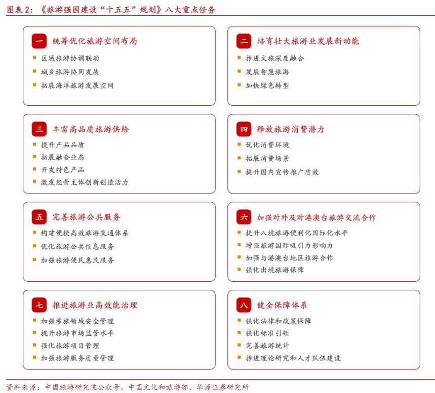
一句话核心
中国出了一份"旅游强国"的五年规划，目标是 2030 年国内出游 83 亿人次、花掉 7.7 万亿元——本质上是在土地财政熄火后，试图把"旅游消费"扶成新的经济和税收支柱。
背景与关键数据
"十五五" = 第十五个五年规划，覆盖 2026–2030 年。五年规划是中国经济治理的核心工具——它不只是预测，更是资源分配的指挥棒：写进规划的行业，会拿到土地、信贷、审批的倾斜。
核心目标（2030 年）：
| 指标 | 目标值 | 含义 |
|---|---|---|
| 国内居民出游人次 | 83 亿 | 按 14 亿人口算，人均每年出游约 6 次 |
| 国内出游总花费 | 7.7 万亿元 | 人均每次出游花约 928 元 |
| 入境旅游人次 | 1.9 亿 | 相当于每年有 1.9 亿外国人/港澳台同胞来 |
| 入境旅游总花费 | >1500 亿美元 | 约合人民币 1.1 万亿元 |
几个值得推敲的数字：
- 7.7 万亿元是什么概念？约占中国 GDP（约 140 万亿）的 5.5%。这是一个真正的支柱产业级别的目标。
- 人均每次花 928 元——这个数字其实很低（含交通、住宿、门票、餐饮）。它暗示规划里的"出游"大量是周边游、一日游、本地游，而不是高消费的长途旅行。这也意味着，这个目标主要靠"人次"堆出来，而不是靠"客单价"。
- 入境游 1.9 亿人次 + 1500 亿美元 才是更值得注意的部分。入境游是服务贸易出口——外国人在中国花钱，等价于中国出口了服务，能赚外汇。在货物出口面临关税压力的背景下，这是一个明确的战略意图。
图片解读
图 1（华源证券《旅游强国建设"十五五"规划》八大重点任务）：一张 2×4 的任务网格图，红白配色。
| 序号 | 任务 | 子项 | 我的解读 |
|---|---|---|---|
| 一 | 统筹优化旅游空间布局 | 区域旅游协调联动、城乡旅游协同发展、拓展海洋旅游发展空间 | "海洋旅游"是新提法——邮轮、海岛、滨海度假 |
| 二 | 培育壮大旅游业发展新动能 | 推进文旅深度融合、发展智慧旅游、加快绿色转型 | "智慧旅游"= 数字化/AI，对应科技公司的机会 |
| 三 | 丰富高品质旅游供给 | 提升产品品质、拓展融合业态、开发特色产品、激发经营主体创新创造活力 | 供给侧——承认现在的产品不够好 |
| 四 | 释放旅游消费潜力 | 优化消费环境、拓展消费场景、提升国内宣传推广质效 | 需求侧的核心，"释放潜力"暗示当前受抑制 |
| 五 | 完善旅游公共服务 | 构建便捷高效旅游交通体系、优化旅游公共信息服务、加强旅游便民惠民服务 | 基建配套 |
| 六 | 加强对外及对港澳台旅游交流合作 | 提升入境旅游便利化国际化水平、增强旅游国际吸引力影响力、加强与港澳台地区旅游合作、强化出境旅游保障 | 对应 1.9 亿入境目标——"便利化"是关键词（签证、支付） |
| 七 | 推进旅游业高效能治理 | 加强涉旅领域安全管理、提升旅游市场监管水平、强化旅游项目管理、加强旅游服务质量管理 | 监管——"强化旅游项目管理"值得注意（见下） |
| 八 | 健全保障体系 | 强化法律和政策保障、强化标准引领、完善旅游统计、推进理论研究和人才队伍建设 | 制度配套 |
来源：中国旅游研究院公众号、中国文化和旅游部、华源证券研究所。
这张图传达的信号：任务四"释放旅游消费潜力"和任务六"提升入境旅游便利化国际化水平"是全篇的重点。前者对内（拉动内需），后者对外（赚外汇 + 软实力）。
⚠️ 一个容易被忽略的细节：任务七里的"强化旅游项目管理"——这可能是对帖 4（洛阳古都丽景）那类"文旅开发"城投项目的直接回应。全国有大量地方政府投了几十亿建的景区、古镇、文旅小镇，现在空空如也，成了城投的坏账来源。"强化项目管理"读起来像是"以后别再乱建了"。
为什么重要 / 对市场和经济的含义
关键：为什么 Jason 给这条打了 #TAX#（税收）标签？
这是本帖最值得琢磨的地方。表面上这是个旅游行业新闻，但 Jason 把它归到"税"。把它和帖 4（城投违约）放在一起看，逻辑就通了：
地方财政的旧模式（土地财政）： 卖地 → 收土地出让金（曾占地方财政收入的 30–40%）→ 修基建 → 抬高地价 → 再卖地。
**这个循环已经断了。**房地产下行，土地卖不动，地方政府的钱袋子空了（帖 4 评论里的"地方公共财政早已无法三保，土地财政无以为继"）。
**那新的财源在哪？**大致三个方向：
- 消费税（旅游、餐饮、零售 → 增值税 + 消费税，且是地方能分成的税种）
- 房产税（阻力极大，帖 4 评论提到"收房产税和遗产税吧"）
- 服务贸易出口（入境游赚外汇）
**旅游同时命中了 (1) 和 (3)。**7.7 万亿的国内旅游消费能产生可观的增值税、消费税；1500 亿美元的入境游消费则是纯粹的外汇收入。
**所以这份规划的潜台词是：把"人流"变成新的"地流"——过去靠卖地收钱，现在靠消费收税。**这就是 #TAX# 标签的含义。
对市场的含义：
- 受益方向：OTA（携程等）、酒店、免税、机场、景区、餐饮、演艺、地方文旅国企。"智慧旅游"（任务二）可能利好做旅游数字化的科技公司。
- 但要打折扣：五年规划的目标常常是"愿景"而非"预测"。人均 928 元/次这个客单价说明，这更多是"人次的胜利"而非"消费升级"——量增价平，对企业利润率的帮助有限。
- 入境游是最实的一块：如果签证便利化（240 小时过境免签已经在推）、支付便利化（外卡绑定微信/支付宝）真正落地，1.9 亿入境人次不是天方夜谭。这块的弹性最大。
延伸知识
① 旅游业的经济学：它到底算什么？ 一个很有意思的会计问题：外国人来中国旅游，在 GDP 里算什么？
答案：算出口（服务出口）。因为它满足"出口"的定义——外国人用外汇购买了本国生产的商品和服务。一个法国人在西湖边买了杯茶，和中国往法国出口了一批茶叶，在国际收支表上是同一性质的事——都是赚外汇。
这就是为什么在贸易摩擦、关税上升的年代，各国都突然开始重视入境游——它是一种关税打不到的出口。你可以对中国的电动车加 100% 的关税，但你没法对"法国人来中国玩"征关税。
这个视角能解释很多现象：西班牙、泰国、希腊这些"旅游大国"，本质上是服务出口大国；日本 2015 年后疯狂推入境游（"观光立国"），也正是在贸易顺差萎缩的背景下发生的。中国现在走的是同一条路。
② 五年规划怎么读？——看"新提法" 读中国的五年规划有一个实用技巧：**不要读它说了什么，要读它比上一版多说了什么。**因为规划文本是高度延续的，绝大部分内容是复制上一版；新增的词组，才是真正的政策信号。
本次值得留意的新提法：
- "拓展海洋旅游发展空间"（任务一）——邮轮、海岛。这可能与南海战略、海南自贸港有隐含关联。
- "发展智慧旅游"（任务二）——AI/数字化正在被写进传统行业的规划。
- "提升入境旅游便利化国际化水平"（任务六）——签证、支付、语言。这是最有可能出台具体措施的一条。
- "强化旅游项目管理"（任务七）——约束新增投资，防止再造一堆空景区。
建议的跟踪方法：把这八大任务当成一个 checklist，未来 12 个月里每出台一个具体政策，就打一个勾。打勾最快的那一栏，就是政策决心最大的方向，也是资金最该跟的方向。
帖 7 · 14:19 · #金融#
帖子原文
bloomberg：随着利雅得和阿布扎比为争夺地区主导地位而战，全球银行可能被迫选边站。
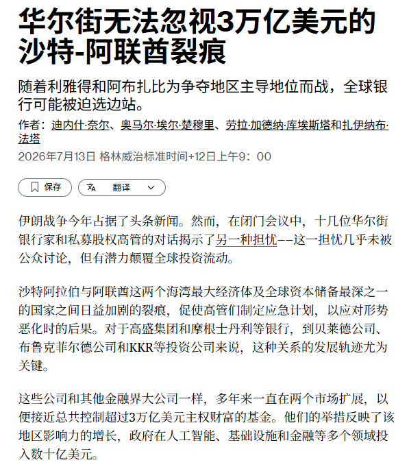
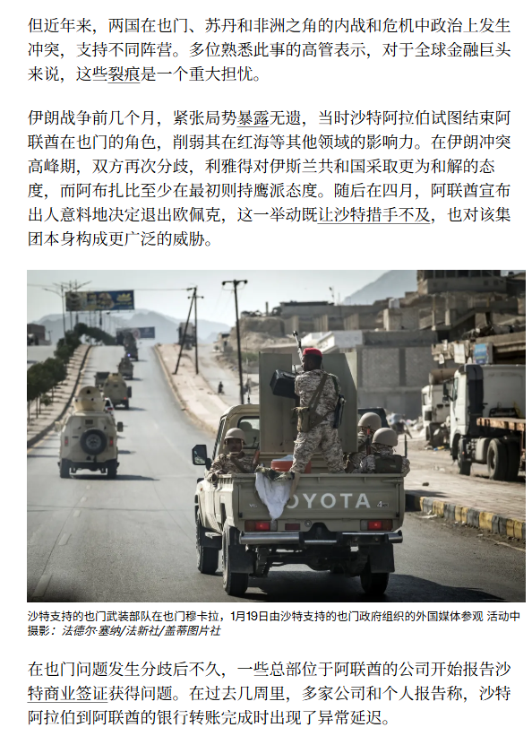
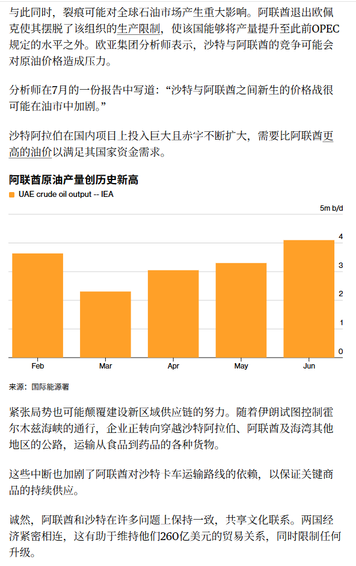
一句话核心
沙特和阿联酋这两个海湾巨头正在翻脸，而它们合计掌握着 3 万亿美元的主权财富——高盛、摩根士丹利、黑石、贝莱德、KKR 这些华尔街巨头，可能被迫在两个金主之间选边站。
背景与关键数据
先认地名：
- 利雅得（Riyadh） = 沙特阿拉伯首都
- 阿布扎比（Abu Dhabi） = 阿联酋首都（迪拜是阿联酋最大的城市，但阿布扎比才是首都和石油/资本中心）
"3 万亿美元"是什么钱？ 主要是两国的主权财富基金（Sovereign Wealth Fund, SWF）：
| 基金 | 国家 | 规模（量级） |
|---|---|---|
| PIF（公共投资基金） | 沙特 | ~9,000 亿美元 |
| ADIA（阿布扎比投资局） | 阿联酋 | ~1 万亿美元 |
| Mubadala（穆巴达拉） | 阿联酋 | ~3,000 亿美元 |
| ADQ | 阿联酋 | ~2,500 亿美元 |
| 其他 | 两国 | 其余 |
**主权财富基金是什么？**国家把卖石油赚的外汇，交给一个专业机构去全球投资（股票、债券、私募股权、房地产、基础设施）。它的目的是把"会枯竭的石油"转换成"不会枯竭的金融资产"——这是海湾国家应对"后石油时代"的核心战略。
对华尔街而言，这些基金是什么？是LP（有限合伙人，出资人）——是最大、最稳、最不挑剔的一类客户。黑石、KKR、贝莱德的每一只大基金，背后几乎都有海湾资本。得罪其中一个，等于砍掉自己一大块募资来源。
裂痕的具体表现（来自图片）：
| 领域 | 冲突 |
|---|---|
| 地缘政治 | 也门、苏丹、非洲之角的内战中支持不同阵营 |
| 伊朗政策 | 伊朗冲突高峰期，利雅得对伊朗采取更为和解的态度，阿布扎比至少最初持鹰派态度 |
| 也门主导权 | 伊朗战争前几个月，沙特试图结束阿联酋在也门的角色，削弱其在红海等领域的影响力 |
| OPEC | 四月，阿联酋出人意料地决定退出欧佩克——"这一举动既让沙特措手不及，也对该集团本身构成更广泛的威胁" |
| 商业签证 | 也门问题分歧后不久，总部位于阿联酋的公司开始报告沙特商业签证获得问题 |
| 银行转账 | 过去几周里，多家公司和个人报告，沙特阿拉伯到阿联酋的银行转账完成时出现异常延迟 |
⚠️ 最后两条是"金融战"已经开打的实锤。签证卡脖子、跨境转账"异常延迟"——这已经不是外交辞令上的分歧，而是用金融和行政手段互相施压。
Bloomberg 原文的定性：
"伊朗战争今年占据了头条新闻。然而，在闭门会议中，十几位华尔街银行家和私募股权高管的对话揭示了另一种担忧——这一担忧几乎未被公众讨论，但有潜力颠覆全球投资流动。"
图片解读
图 1（Bloomberg 文章头版）：标题《华尔街无法忽视 3 万亿美元的沙特-阿联酋裂痕》，副标题"随着利雅得和阿布扎比为争夺地区主导地位而战，全球银行可能被迫选边站"。发布时间 2026年7月13日 GMT+12 上午 9:00。
正文关键段：
"沙特阿拉伯与阿联酋这两个海湾最大经济体及全球资本储备最深之一的国家之间日益加剧的裂痕，促使高管们制定应急计划，以应对形势恶化时的后果。对于高盛集团和摩根士丹利等银行，到贝莱德公司、布鲁克菲尔德公司和 KKR 等投资公司来说，这种关系的发展轨迹尤为关键。"
"这些公司多年来一直在两个市场扩展，以便接近总共控制超过 3 万亿美元主权财富的基金。"
图 2（也门 + 商业摩擦）：上半段讲政治冲突的具体战场。中间是一张照片：沙特支持的也门武装部队在穆卡拉的车队（丰田皮卡上架着重机枪，1月19日由沙特支持的也门政府组织的外国媒体参观活动，摄影：法德尔·塞纳/法新社）。
这张照片的作用是把抽象的"地缘裂痕"具象化——沙特和阿联酋在也门支持的是不同的武装派系。这不是"外交辞令上的分歧"，而是代理人战争（proxy war）：两国的钱和武器，正在也门的土地上打对方。
下半段的两条商业信号最关键：沙特商业签证获批困难、沙特→阿联酋银行转账异常延迟。
图 3（石油价格战 + 数据图）：这是三张图里信息量最高的一张。
核心逻辑链：
"阿联酋退出欧佩克使其摆脱了该组织的生产限制，使该国能够将产量提升至此前 OPEC 规定的水平之外。欧亚集团分析师表示，沙特与阿联酋的竞争可能会对原油价格造成压力。"
分析师 7 月报告："沙特与阿联酋之间新生的价格战很可能在油市中加剧。"
"沙特阿拉伯在国内项目上投入巨大且赤字不断扩大，需要比阿联酋更高的油价以满足其国家资金需求。"
柱状图《阿联酋原油产量创历史新高》（来源：国际能源署 IEA）：
- 纵轴：5m b/d（每天 500 万桶），刻度 0–4+
- 横轴：Feb / Mar / Apr / May / Jun（2026年）
- Feb ≈ 3.3 / Mar ≈ 2.2 / Apr ≈ 2.9 / May ≈ 3.1 / Jun ≈ 3.9（历史新高）
这张图讲的故事：3 月产量掉到 2.2（可能是配额约束或检修），然后 4 月宣布退出 OPEC，产量就一路狂奔到 6 月的 3.9，创历史新高。这是"挣脱枷锁"的直接证据——阿联酋退出 OPEC 之后，立刻开始满产。
为什么这会打压油价？因为 OPEC 的全部作用就是限产保价（卡特尔）。阿联酋退出并满产，等于卡特尔出现了叛徒。沙特面临一个经典困境：
- 跟着增产 → 油价暴跌，但至少保住市场份额（2014、2020 年沙特都这么干过）。
- 继续减产 → 油价撑住了，但减出来的份额被阿联酋白白拿走。
而图 3 那句"沙特需要比阿联酋更高的油价"是致命的。这里的关键概念是财政平衡油价（fiscal breakeven oil price）——政府预算实现收支平衡所需的油价：
- 沙特：因为 NEOM 新城、2030 愿景等天量投资，财政平衡油价被推得很高（市场估算 90–100 美元/桶 量级）。
- 阿联酋：经济更多元化（迪拜的金融、贸易、旅游），财政平衡油价低得多（估算 50–60 美元/桶 量级）。
**这意味着在一场价格战里，阿联酋能扛的时间比沙特长得多。**沙特处于结构性劣势。
图末的缓和因素：
"诚然，阿联酋和沙特在许多问题上保持一致，共享文化联系。两国经济紧密相连，这有助于维持他们 260 亿美元的贸易关系，同时限制任何升级。"
为什么重要 / 对市场和经济的含义
这条被 Jason 打上 #金融# 标签，是准确的——它的核心冲击在金融，不在能源。
1. 对油价：这是一个"看跌"因素，与帖 5（中东战争）方向相反
今天这两条帖子形成了一个非常有趣的对冲：
| 帖 5（美伊战争 + 霍尔木兹） | 帖 7（沙特-阿联酋价格战） |
|---|---|
| 供给中断风险 → 油价 ↑ | 供给增加 + 卡特尔瓦解 → 油价 ↓ |
| 短期、脉冲式 | 中期、结构性 |
这解释了为什么油价可能表现得比新闻标题暗示的"温和"——两股力量在打架。理解这一点，比单看任何一条新闻都重要。这也是每日跟读的价值：单条新闻会误导你，一组新闻才能给你全貌。
2. 对华尔街：真正的"被迫选边"风险
想象一下你是黑石的募资负责人。PIF（沙特）和 ADIA（阿布扎比）都是你的大 LP。现在两家开始互相制裁：
- 你在利雅得开个办公室，阿布扎比会不会不高兴？
- 你参与了沙特的 NEOM 项目，阿联酋的钱还会给你吗？
- 你的沙特团队和阿联酋团队，还能不能坐在一起开会？
"应急计划（contingency plans）"这个词出现在 Bloomberg 的原文里，说明这已经不是假设，而是华尔街正在做的实际准备。
这对相关公司的具体影响：募资难度上升、地区业务需要"防火墙"隔离、合规成本上升。对高盛、大摩、黑石、KKR、贝莱德、布鲁克菲尔德的中东业务是一个实实在在的负面因素——虽然短期不会体现在财报上，但它是一个正在积累的结构性风险。
3. 更宏大的图景：全球资本流向的重塑
**过去十年最重要的资本流动之一，就是"海湾资本 → 西方资产（尤其是私募股权、科技、房地产）"。**如果两个最大的水龙头开始互相对着喷，这条资本河流的流向和流量都会改变。极端情况下，它可能改变全球私募股权、风险投资的募资环境——而这会一路传导到硅谷的估值。
4. 与帖 5 的联动：一个正在碎裂的中东
沙特对伊朗"和解"、阿联酋"鹰派"——**这意味着在美伊冲突中，两国站在不同的位置。**如果冲突继续升级（帖 5），**这个分歧会被放大，而不是弥合。**中东正在从"美国主导下的相对稳定"，走向"多极竞争 + 内部撕裂"。这对全球能源和资本的稳定性，是一个长期的负面因素。
延伸知识
① OPEC 是一个卡特尔——而卡特尔的宿命是背叛
卡特尔（Cartel）：一群生产者联合起来限制产量、抬高价格。经典的博弈论问题：
假设 OPEC 所有成员一起减产，油价从 60 涨到 100。每个成员都会想：
"如果只有我一个人偷偷多产 50 万桶，油价基本不会动（我太小了），但我的收入直接增加。别人守规矩，我搭便车——我赚翻了。"
问题是每个人都这么想。于是所有人都偷偷超产，减产协议名存实亡，油价跌回原点——这就是囚徒困境的经典结局。
卡特尔要能维持，必须有两个条件：
- 一个愿意承担"减产成本"的老大（swing producer，机动生产者）——历史上一直是沙特。
- 有效的监督和惩罚机制——OPEC 一直很弱，主要靠沙特的威慑（"你敢超产，我就开闸把价格打到你破产"）。
阿联酋退出 OPEC，是直接掀桌子——它不是"偷偷超产"，而是公开宣布不玩了。这比作弊严重得多，因为它摧毁的是卡特尔的合法性本身。其他成员会想："阿联酋能走，我为什么不能？"
历史参照：
- 2014 年：沙特拒绝独自减产，油价从 110 崩到 30（目的是打死美国页岩油）。
- 2020 年 3 月：俄罗斯拒绝配合减产，沙特随即宣布增产报复，油价单日暴跌 30%，一个月后 WTI 甚至跌到负数。
每一次，机制都是一样的：老大不愿意再当冤大头。
② 财政平衡油价（Fiscal Breakeven）——判断产油国"谁能扛"的关键指标
这是石油政治里最实用的一个指标。它回答的问题是：这个国家的政府预算，需要油价多高才能收支平衡？
- 油价 高于财政平衡价 → 政府有盈余，可以撒钱、可以扛住价格战。
- 油价 低于财政平衡价 → 政府赤字，要动用外汇储备或发债，扛不了太久。
几个粗略的量级参照（会随预算变化）：
| 国家 | 财政平衡油价（美元/桶，量级） |
|---|---|
| 科威特 | 最低，~50 |
| 阿联酋 | ~50–60 |
| 沙特 | ~90–100（因 NEOM 等巨额投资被推高） |
| 俄罗斯 | ~70–90 |
| 伊朗、尼日利亚、伊拉克 | 更高，且受制裁影响 |
这就是 Bloomberg 那句"沙特需要比阿联酋更高的油价"的全部分量。
推论：沙特其实是最输不起价格战的那一方——它有最庞大的国内开支承诺（2030 愿景、NEOM 新城），却要在一场比"谁扛得久"的消耗战里对上一个开支纪律好得多的对手。这也解释了为什么沙特在伊朗问题上突然变得"和解"——它需要一个稳定的、油价不至于崩盘的中东。它承受不起一场长期的混乱。
实用价值：下次看到"某产油国增产/减产"的新闻，先去查一下它的财政平衡油价。这个数字会告诉你，它的表态到底有多少可信度。
帖 8 · 14:31 · #人口#
帖子原文
李迅雷：情况就是这么个情况
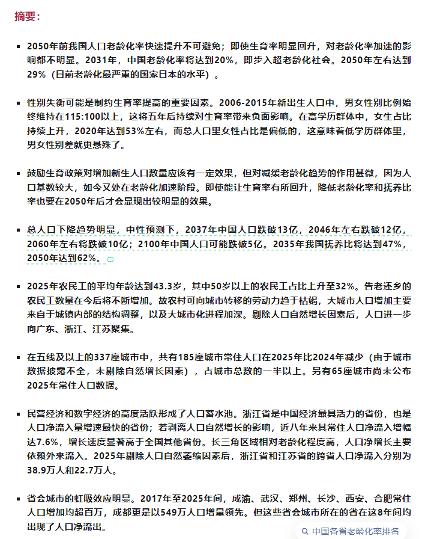
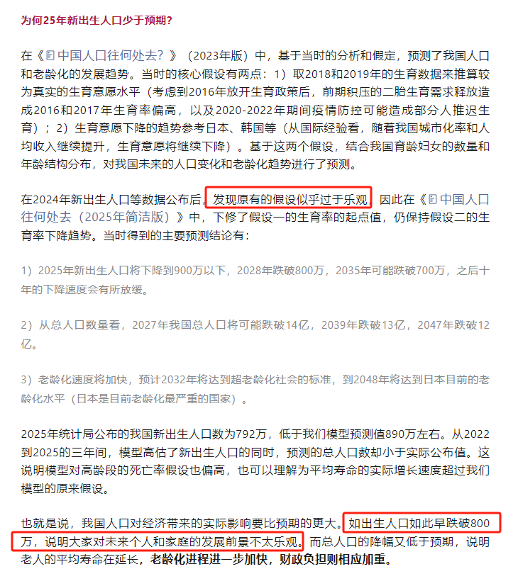
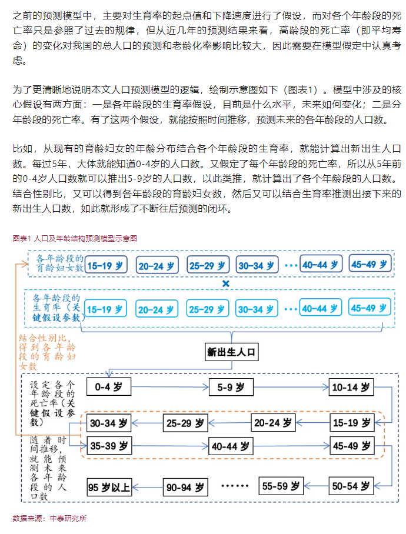
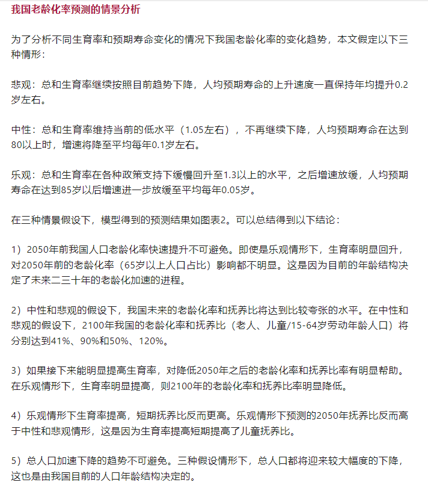
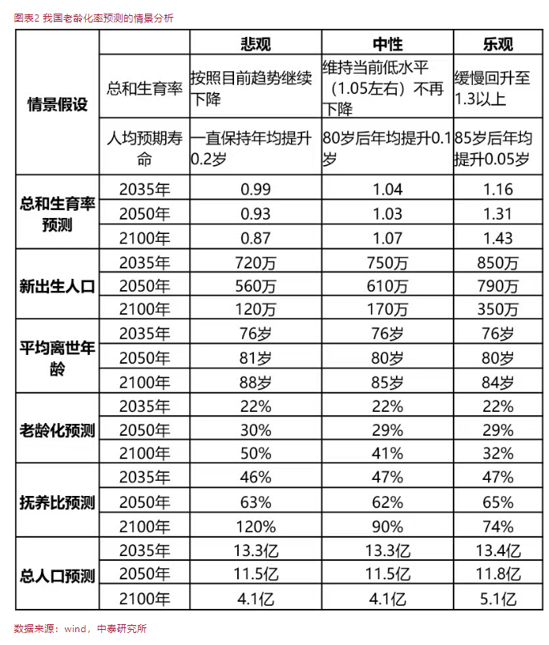
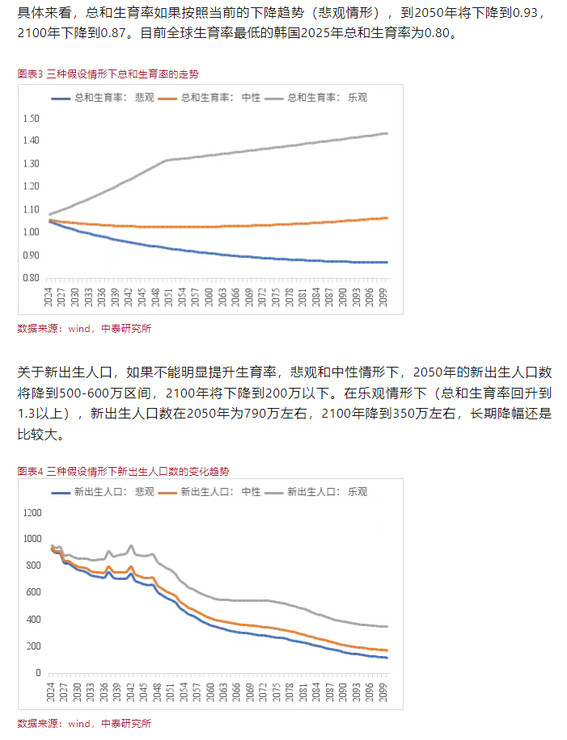
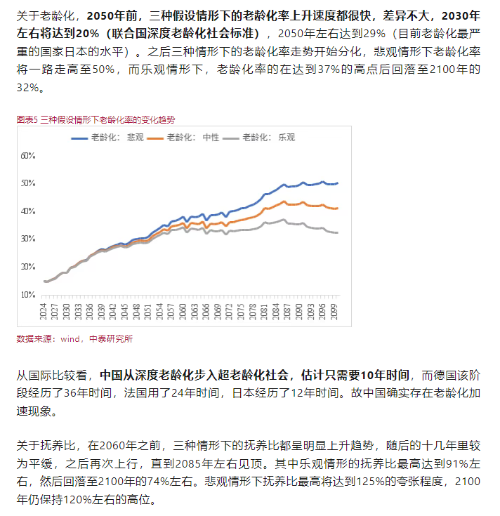
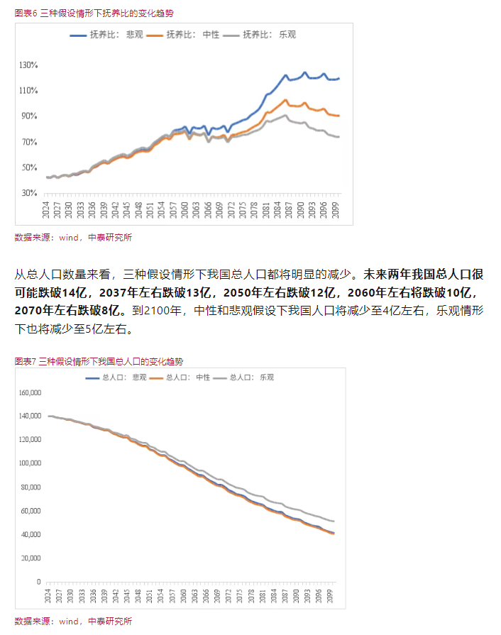
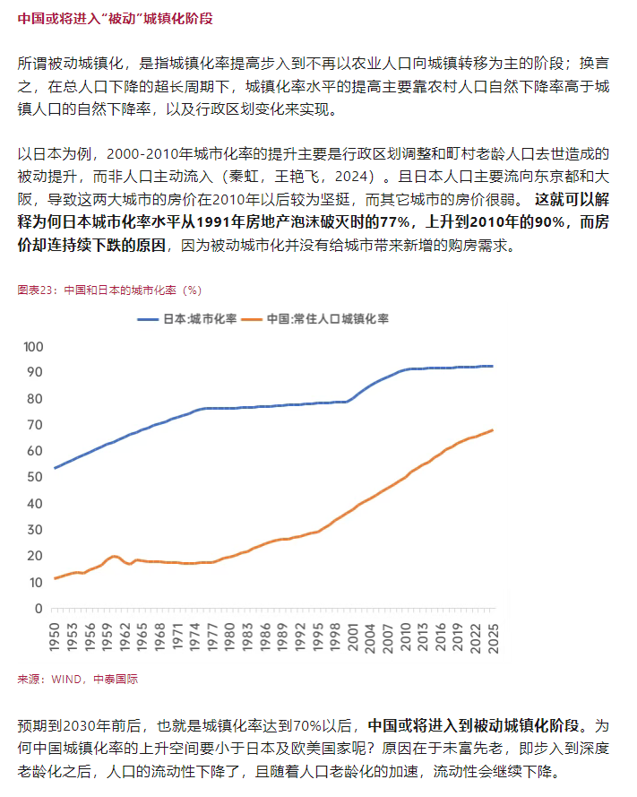
一句话核心
中泰证券首席经济学家李迅雷更新了中国人口预测模型——结论是：**连他自己两年前的悲观预测都太乐观了。**2025 年新出生 792 万（模型预测是 890 万），2031 年中国进入超老龄化社会，**2100 年总人口可能只剩 4–5 亿。**Jason 那句"情况就是这么个情况"，是一种无话可说的沉重。
背景与关键数据
关键人物：李迅雷是中国最有影响力的卖方经济学家之一（中泰证券首席），他的《中国人口往何处去》系列是研究中国人口最重要的报告之一。他的分量在于：他是体制内的主流经济学家，不是唱衰者。当他给出这样的数字时，它的可信度和冲击力都远大于外部批评者。
这次更新的核心事件——模型被现实打脸：
| 项目 | 数值 |
|---|---|
| 2025 年模型预测新出生人口 | 890 万 |
| 2025 年统计局实际公布 | 792 万 |
| 误差 | 实际比模型低了约 100 万，低 11% |
李迅雷自己的复盘（图 1）：
"在 2024 年新出生人口数据公布后，发现原有的假设似乎过于乐观。" "从 2022 到 2025 的三年间，模型高估了新出生人口的同时，预测的总人口数却小于实际公布值。这说明模型对高龄段的死亡率假设也偏高，也可以理解为平均寿命的实际增长速度超过我们模型的原来假设。"
⚠️ 这是全篇最重要的一句话，请慢慢读：
两个方向的预测都错了，而且是往同一个坏方向错的：
- 生得比预期还少 → 分母（劳动力）萎缩得更快。
- 活得比预期还长 → 分子（老人）积累得更多。
"**如出生人口如此早跌破 800 万，说明大家对未来个人和家庭的发展前景不太乐观。**而总人口的降幅又低于预期，说明老人的平均寿命在延长，老龄化进程进一步加快，财政负担相应加重。"
这就是"双重挤压"——老龄化的速度比任何模型预测的都要快。
三种情景假设（图 3、图 4）
模型设定了三种情景，核心变量是总和生育率（TFR）和人均预期寿命：
| 悲观 | 中性 | 乐观 | |
|---|---|---|---|
| 总和生育率 | 按目前趋势继续下降 | 维持当前低水平（1.05 左右）不再下降 | 缓慢回升至 1.3 以上 |
| 人均预期寿命 | 一直保持年均提升 0.2 岁 | 80 岁后年均提升 0.1 岁 | 85 岁后年均提升 0.05 岁 |
"总和生育率（TFR）"是什么？ 一个女性一生平均生几个孩子。
关键参照系：
- 2.1 = 世代更替水平（人口不增不减所需的生育率。为什么是 2.1 不是 2.0？因为要补偿夭折和性别比）
- 中国当前 ≈ 1.05 —— 只有更替水平的一半
- 韩国 2025 年 = 0.80 —— 全球最低
- 日本 ≈ 1.2，美国 ≈ 1.6，法国 ≈ 1.8（发达国家中最高）
**⚠️ 请注意这个模型有多"温柔"：连"乐观"情景都只假设生育率回升到 1.3——远远低于 2.1 的更替水平。**换句话说，**这个模型里根本没有"人口不下降"这个选项。**三种情景的区别只是"跌多快"，不是"跌不跌"。这本身就是最重要的信息。
图片解读
图 2（人口预测模型示意图，中泰研究所）：一张流程图，解释模型怎么运作——
- 上半部分：各年龄段的育龄妇女数（15-19, 20-24, ... 45-49岁）× 各年龄段的生育率 = 新出生人口
- 下半部分：设定各年龄段的死亡率 → 从 0-4 岁往上推 5-9 岁、10-14 岁 ...... 一直到 95 岁以上
- 左侧箭头："结合性别比，得到各年龄段的育龄妇女数" —— 闭环
这张图的价值是让你理解人口预测的"惯性"从哪来：今天的新生儿，就是 20 年后的育龄妇女。所以"今年少生 100 万"，会在 20 年后变成"育龄妇女少 50 万"，再变成"40 年后又少生 XX 万"——它是复利式的、自我强化的。
这就是为什么人口问题"救不回来"：不是因为政策没用，而是因为分母（育龄妇女数）已经被 20 年前的低生育率锁死了。哪怕今天每个女性都多生一个，育龄女性的绝对数量还是在断崖式下降。
图 4（图表2：情景分析总表）——本帖数据密度最高的一张，逐行读：
| 指标 | 年份 | 悲观 | 中性 | 乐观 |
|---|---|---|---|---|
| 总和生育率 | 2035 | 0.99 | 1.04 | 1.16 |
| 2050 | 0.93 | 1.03 | 1.31 | |
| 2100 | 0.87 | 1.07 | 1.43 | |
| 新出生人口 | 2035 | 720万 | 750万 | 850万 |
| 2050 | 560万 | 610万 | 790万 | |
| 2100 | 120万 | 170万 | 350万 | |
| 平均离世年龄 | 2035 | 76岁 | 76岁 | 76岁 |
| 2050 | 81岁 | 80岁 | 80岁 | |
| 2100 | 88岁 | 85岁 | 84岁 | |
| 老龄化率 | 2035 | 22% | 22% | 22% |
| 2050 | 30% | 29% | 29% | |
| 2100 | 50% | 41% | 32% | |
| 抚养比 | 2035 | 46% | 47% | 47% |
| 2050 | 63% | 62% | 65% | |
| 2100 | 120% | 90% | 74% | |
| 总人口 | 2035 | 13.3亿 | 13.3亿 | 13.4亿 |
| 2050 | 11.5亿 | 11.5亿 | 11.8亿 | |
| 2100 | 4.1亿 | 4.1亿 | 5.1亿 |
这张表最震撼的信息，是"三种情景在 2050 年前几乎没有区别"：
- 2035 年老龄化率：三种情景都是 22%
- 2050 年老龄化率：30% / 29% / 29% —— 几乎一样！
**为什么？**因为 **2050 年的老人，今天已经出生了。**生育率再怎么变，也改变不了"2050 年 65 岁的人 = 1985 年出生的人"这个事实。未来 25 年的老龄化，已经是既成事实，不可改变。
生育率的差异只在 2100 年才显现出来（老龄化率 50% vs 32%，总人口 4.1 亿 vs 5.1 亿）。
⚠️ 这个洞察的政策含义极其重要：
鼓励生育政策"救不了"未来 25 年的老龄化，它只能改变 2050 年之后的图景。
报告里说得很直白（图 3）："鼓励生育政策对增加新生人口数量应该有一定效果，但对减缓老龄化趋势的作用甚微，因为人口基数较大，如今又处在老龄化加速阶段。即使能让生育率有所回升，降低老龄化率和抚养比也要在 2050 年后才会显现出较明显的效果。"
图 5（图表3、图表4）：
- 图表 3（总和生育率走势）：三条线从 2024 年的约 1.06 出发——悲观（蓝） 一路下滑到 2100 年的 0.87；中性（橙） 基本横盘在 1.03–1.07；乐观（灰） 上升到 1.43。文字说明特别提到："目前全球生育率最低的韩国 2025 年总和生育率为 0.80。" —— 也就是说，悲观情景下的中国（0.87），比今天的韩国好不了多少。
- 图表 4（新出生人口走势）：纵轴 0–1200（万人）。三条线从 2024 年约 950 万一路下滑。**悲观/中性情景下，2050 年降到 500–600 万区间，2100 年跌破 200 万。**乐观情景 2050 年 790 万，2100 年 350 万。注意：即使最乐观的线，也是持续向下的。
图 6（图表5：老龄化率走势）：纵轴 10%–60%。三条线在 2050 年之前几乎完全重合（这正是上面说的"既成事实"），2024 年约 15%，2030 年左右达到 20%（联合国深度老龄化社会标准），2050 年约 29%（日本目前的水平）。之后开始分化：悲观一路走高至 50%，乐观在 37% 见顶后回落至 32%。
文字里有一句极其重要的国际比较：
"中国从深度老龄化步入超老龄化社会，估计只需要 10 年时间，而德国该阶段经历了 36 年，法国用了 24 年，日本经历了 12 年。故中国确实存在老龄化加速现象。"
中国是全世界老得最快的大国——比日本还快。
图 7（图表6：抚养比 / 图表7：总人口）：
- 抚养比（老人+儿童 ÷ 15-64岁劳动年龄人口）：2024 年约 45%，悲观情景 2087 年左右见顶于 125%，2100 年仍在 120% 高位；乐观情形最高 91%，回落至 74%。
- 125% 是什么概念？ 每 100 个劳动年龄人口，要养 125 个非劳动人口。养的人比干活的人还多。
- 总人口：从 2024 年的约 140,000（万人，即 14 亿）一路下滑。文字：
"**未来两年我国总人口很可能跌破 14 亿，2037 年左右跌破 13 亿，2050 年左右跌破 12 亿，2060 年左右将跌破 10 亿，2070 年左右跌破 8 亿。**到 2100 年，中性和悲观假设下我国人口将减少至 4 亿左右，乐观情形下也将减少至 5 亿左右。"
图 8（图表23：中国和日本的城市化率）——本帖最有"交易价值"的一张图
标题是一个新概念："中国或将进入'被动'城镇化阶段"。
"被动城镇化"是什么？（原文定义）
"城镇化率提高步入到不再以农业人口向城镇转移为主的阶段；换言之，在总人口下降的超长周期下，城镇化水平的提高主要靠农村人口自然下降率高于城镇人口的自然下降率，以及行政区划变更来实现。"
大白话翻译：
- 过去的城镇化（主动）：年轻人从农村进城打工 → 城市人口增加 → 他们要买房、要消费 → 房价涨、经济增长。
- 未来的城镇化（被动）：农村的老人死得比城市的老人快（农村老龄化更严重），所以农村人口的分母缩得更快，城镇化率的数字自然就上去了；再加上"把县改成区"这种行政区划调整。→ 城市并没有真的多出一个人，也没有多出一份购房需求。
图表 23 解读（来源：WIND、中泰国际）：
- 横轴 1950–2025，纵轴 0–100%
- 蓝线（日本城市化率）：1950 年约 53%，一路上升，1991 年（房地产泡沫破灭时）约 77%，2010 年升至 90%，之后横盘在 92% 左右。
- 橙线（中国常住人口城镇化率）：1950 年约 11%，改革开放后加速，2025 年约 67%，仍在上升但斜率放缓。
这张图的杀伤力在原文那句话：
"这就可以解释为何日本城市化率水平从 1991 年房地产泡沫破灭时的 77%，上升到 2010 年的 90%，而房价却连续持续下跌的原因，因为被动城市化并没有给城市带来新增的购房需求。"
⚠️ 请把这句话读三遍。
它直接击碎了中国房地产多头最后的一个论据。过去十几年，每当有人担心中国房价，标准的反驳是："中国城镇化率才 6X%，还有巨大空间，人口还会持续进城，房价有支撑。"
李迅雷这张图说：日本的城市化率从 77% 涨到 90%（涨了 13 个百分点！），房价跌了 20 年。
因为城市化率这个数字上涨，不等于购房需求上涨。如果城市化率的上涨来自"农村老人凋零"和"行政区划改名"，那么这个数字每上涨一个百分点，都不会带来一个新的买房人。
原文预期："到 2030 年前后，也就是城镇化率达到 70% 以后，中国或将进入到被动城镇化阶段。"
原因（原文）："在于未富先老，即步入到深度老龄化之后，人口的流动性下降了，且随着人口老龄化的加速，流动性会继续下降。"
**"人口的流动性下降"——老年人是不搬家的。**这是一个简单到近乎残酷的事实。
图 9（摘要页）：全文核心结论的浓缩，几个新增的关键数据：
- 2031 年，中国老龄化率将达到 20%，即步入超老龄化社会。（比图 6 说的"2030 年左右"更精确）
- 性别失衡可能是制约生育率提高的重要因素。 2006-2015 年新出生人口中，男女性别比例始终维持在 115:100 以上，这将五年后持续对生育率带来负面影响。在高学历群体中，女生占比持续上升，2020 年达 53% 左右，而总人口里女性占比是偏低的，这意味着低学历群体里，男女性别差就更悬殊了。
- 这条极其重要，也极其容易被忽略。"男多女少"意味着有一批男性根本找不到配偶——他们不是"不想生"，是"没法生"。这是生育率的硬约束，任何补贴政策都无解。
- 2025 年农民工的平均年龄达到 43.3 岁，其中 50 岁以上的农民工占比上升至 32%。
- "农村可向城市转移的劳动力趋于枯竭" —— **这是"人口红利结束"最直接的实证。**中国过去 40 年的增长引擎（廉价农民工）正在熄火。
- 在五线及以上的 337 座城市中，共有 185 座城市常住人口在 2025 年比 2024 年减少，占城市总数的一半以上。
- 人口正在向广东、浙江、江苏聚集。 浙江近八年常住人口净流入增幅达 7.6%，全国最高。2025 年剔除人口自然萎缩因素后，浙江省和江苏省的跨省人口净流入分别为 38.9 万人和 22.7 万人。
- 省会城市的虹吸效应明显。 2017-2025 年间，成渝、武汉、郑州、长沙、西安、合肥常住人口增加均超百万，成都以 549 万人口增量领先。但这些省会城市所在的省在这 8 年间均出现了人口净流出。
- "省会吸血"的精确表述：省会在长大，但整个省在萎缩。这是零和游戏，不是增长。
为什么重要 / 对市场和经济的含义
这是理解中国未来 30 年最重要的一份材料。它的含义渗透到每一类资产：
1. 房地产：最后一个多头论据被拆除
- "城镇化还有空间"这个说法在"被动城镇化"面前失效了。
- 185/337 座城市人口在减少 → 绝大多数三四线城市的房子，没有基本面支撑。
- 只有广东、浙江、江苏 + 少数强省会有人口净流入 → 房地产的分化不是周期性的，是永久性的。"全国房价"这个概念本身正在失去意义。
2. 财政：这是帖 4（城投违约）的深层原因
- 老龄化率 2050 年到 29–30%，抚养比到 62–65%。
- 养老金和医保的支付压力将是天文数字，而缴费的人在减少。
- 原文明确说："老龄化进程进一步加快，财政负担相应加重。"
- 把帖 4 和帖 8 连起来看：城投还不上钱 → 是因为地方财政没钱 → 是因为土地卖不动（人口下降、买房人减少）+ 养老支出激增。这不是一个短期的流动性问题，是一个长期的、结构性的偿付能力问题。
3. 消费：结构性的迁移
- 利空：婴幼儿用品、教育、婚庆、首套房、新能源车（年轻人买）。
- 利多：医疗、医药、养老、殡葬、保险（尤其是养老年金）、适老化改造、护理机器人。
- 注意：老年人的消费能力和意愿都低于年轻人（生命周期消费理论），所以总消费的天花板在下降。这不是"消费结构变化"，而是"消费总量承压 + 结构变化"。
4. 利率：长期向下
- 人口下降 → 潜在增长率下降 → 中性利率（r*）下降 → 长期国债收益率的中枢下移。
- 这就是为什么中国 30 年国债收益率一路下行，也是为什么"日本化"这个词越来越多地被用在中国身上。
- 对交易的含义：中国长债的长期牛市有坚实的人口学基础。这可能是本帖最直接的"可交易"结论。
5. 与帖 1（日本）的呼应——今天的编排太妙了
| 日本 | 中国 | |
|---|---|---|
| 劳动力见顶 | 2025 年（约 7000 万） | 已经见顶 |
| 从深度老龄化到超老龄化 | 12 年 | 约 10 年（更快） |
| 应对手段 | 提高参与率（已用尽）、AI/自动化、外劳 | ？ |
| 城市化率 | 77% → 90%，房价跌 20 年 | 67% → ?，正在走同一条路 |
| 结果 | 三十年低增长、低利率、低通胀 | ？ |
Jason 把帖 1（日本）和帖 8（中国）放在同一天，"情况就是这么个情况"这六个字的分量，就在这个对照里。
日本是中国的一面镜子，而中国正在以更快的速度走完日本走过的路——但中国是"未富先老"（日本进入老龄化时人均 GDP 已达 3-4 万美元，中国现在是 1.3 万美元左右）。
延伸知识
① 人口的"惯性"——为什么它是宏观里最可预测的变量
宏观经济里几乎所有变量都难以预测（GDP、通胀、汇率、股价），唯独人口是个例外。
原因很简单：2050 年的 25 岁人口，就是 2025 年出生的人。这已经是既成事实，谁也改不了。
这给了人口分析一个独特的地位：它是宏观里唯一一个可以"看到未来"的变量。
这也是本帖图 4 那个"三种情景 2050 年前几乎没差别"的深层原因——**未来 25 年的人口结构，今天已经全部锁定了。**你能改变的只有 2050 年之后。
实用价值：当你做 10 年以上的长期资产配置时，人口是唯一一个你可以高置信度依赖的输入变量。GDP 增速你猜不准，但"2035 年中国有多少 65 岁以上老人"，误差可以控制在 5% 以内。
② 人口红利的三个阶段——中国正在从第二段跌入第三段
| 阶段 | 特征 | 中国的时间 |
|---|---|---|
| 第一次红利（劳动力红利） | 劳动年龄人口占比上升，抚养负担轻 | 1980–2010（结束了） |
| 第二次红利（储蓄/资本红利） | 中年人为养老而拼命储蓄 → 高储蓄率 → 高投资 → 资本深化 | 2010–2030 左右（正在结束） |
| 人口负债 | 老年人开始消耗储蓄，储蓄率下降，抚养比飙升 | 2030 之后 |
**中国现在正处于第二段的尾巴。**这解释了一个当前的现象：中国的储蓄率仍然很高（居民存款不断创新高），但这不是"经济健康"的信号，而是"中年人为老年恐慌性储蓄"的信号。
而且这个红利即将逆转：当 1962–1975 年的婴儿潮一代（中国最大的一批人口）全面退休，他们会从"储蓄者"变成"消耗者" —— 卖出资产（股票、债券、房子）来支付养老。这在理论上会对资产价格构成长期的抛压。
（延伸阅读方向：搜索 "asset meltdown hypothesis"——婴儿潮退休导致的资产价格下跌假说。这个理论在美国被广泛讨论过，但争议很大，实证支持不算强。不过对中国这种老龄化速度快得多的经济体，它的适用性值得思考。）
③ "未富先老"—— 中国和日本最本质的区别
| 进入深度老龄化时的人均 GDP | |
|---|---|
| 日本（1994年） | 约 4 万美元 |
| 韩国（2018年） | 约 3.3 万美元 |
| 德国 | 约 3 万美元 |
| 中国（2021年） | 约 1.2 万美元 |
**这个差距是决定性的。**日本"老"的时候，它已经完成了工业化、积累了巨额海外资产（日本是全球最大的净债权国）、建立了完善的社保。它可以体面地"老去"。
**中国在人均 GDP 只有日本 1/3 的水平上，就要面对比日本更快的老龄化。**这意味着：
- 社保体系的资金缺口会更大（养老金替代率不足）。
- 没有足够的海外资产来"吃利息养老"。
- 同时要负担老龄化的成本，又要完成产业升级（跨越中等收入陷阱）。
这是李迅雷"财政负担相应加重"这六个字背后真正的分量。
④ 性别比失衡——一个被严重低估的硬约束
摘要里那条"2006-2015 年新出生人口男女性别比维持在 115:100 以上"，值得单独展开。
正常的出生性别比是 103–107:100（自然会略微偏男，因为男婴夭折率略高）。115:100 意味着每 100 个女孩对应 115 个男孩——多出来的 15 个，将来找不到配偶。
按 2006-2015 年每年约 1600 万新生儿计算，这十年积累的"过剩男性"是一个千万量级的数字。
这意味着：即使给再高的生育补贴，有相当一批男性根本没有生育的机会。这是生育率的结构性下限——它不是意愿问题，是数学问题。
更微妙的是摘要里那句："在高学历群体中，女生占比持续上升，2020 年达 53% 左右，而总人口里女性占比是偏低的，这意味着低学历群体里，男女性别差就更悬殊了。"
**翻译：受教育程度高的女性更多，而婚姻市场上存在"男高女低"的传统匹配模式——结果是"高学历女性"和"低学历男性"两头都难以匹配。**这在韩国、日本已经被反复验证，是生育率跌破 1.0 的重要推手之一。
**这条提醒我们：生育率问题不只是"钱"的问题，它是经济、文化、教育、性别结构交织的复杂系统。**任何"发钱就能解决"的说法，都过于天真。
帖 9 · 14:37 · #其他国家经济#
帖子原文
BirthGauge：2025年韩国净移民流入7.4万（低于2024年的12.5万）
（资本管制的另一好处，钱出不去，人出去概率就会减少）
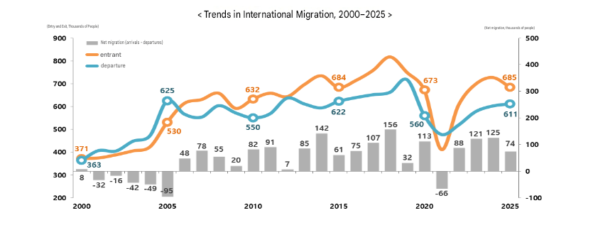
一句话核心
韩国 2025 年净移民流入 7.4 万人，比 2024 年的 12.5 万几乎腰斩。而 Jason 的括号里那句评论才是真正的重点——他在暗示中国：资本管制不只是锁住钱，也顺带锁住了人。
背景与关键数据
"净移民（Net migration）" = 入境人数（entrant）− 离境人数（departure）。
- 正数 = 人口净流入（更多人来）
- 负数 = 人口净流出（更多人走）
为什么韩国的净移民很重要？因为韩国的总和生育率是全球最低的 0.80（帖 8 里刚提到）。在生育率如此之低的情况下，移民是唯一能减缓人口崩溃的手段。净移民从 12.5 万掉到 7.4 万，意味着这个最后的缓冲垫也在变薄。
图片解读
图 1（BirthGauge，《Trends in International Migration, 2000–2025》）：一张双轴组合图。
- 左轴（Entry and Exit, Thousands of People，200–900）：橙线 = entrant（入境），蓝线 = departure（离境）
- 右轴（Net migration, thousands of people，−100 至 500）：灰色柱 = 净移民
逐段读：
| 时期 | 净移民 | 发生了什么 |
|---|---|---|
| 2000–2004 | 8 → −32 → −16 → −42 → −49（连续负值） | 韩国是人口净流出国——人往外走（多为赴美/赴日移民）。这是韩国还不够富的年代。 |
| 2005 | −95（最低点） | 入境 530，离境 625 —— 图上明确标注。这是流出最严重的一年。 |
| 2006 起 | 转正：48, 78, 55, 20... | **拐点。**韩国经济起飞（三星、现代崛起），开始吸引人口。 |
| 2010 | 82（入境 632 / 离境 550） | 入境线超越离境线，剪刀差打开。 |
| 2011–2019 | 91, 7, 85, 142, 61, 75, 107, 156 | 波动上行，2018 年达 156 的高点（入境线接近 820 的峰值）。 |
| 2020–2021 | 32 → 113 → −66 | 疫情冲击：2021 年出现 −66（离境线与入境线交叉，入境暴跌到约 400）。边境关闭 + 外籍劳工回国。 |
| 2022–2024 | 88 → 121 → 125 | 疫情后强劲反弹，入境线冲回 673–685。 |
| 2025 | 74（入境 685 / 离境 611） | 净流入几乎腰斩。注意：入境（685）其实是历史次高，问题出在离境（611）大幅上升。 |
⚠️ 2025 年这个数据的关键在于分解：
- 入境 685（很高，甚至高于 2024 的 673） —— 来韩国的人没有减少。
- 离境 611（大幅上升） —— 是"走的人变多了"，导致净流入减半。
**这是一个非常不同的故事。**如果是"来的人少了"，那是韩国吸引力下降；但"走的人多了"，可能意味着：
- 疫情期间积压的外籍劳工合同到期，集中回国；
- 韩国人自己在往外走（年轻人对国内前景悲观、高房价、高竞争）；
- 外籍人才觉得韩国不宜久留。
（注：图表本身没有区分"离境者"是韩国人还是外国人，这是这张图的一个局限。但离境数字的显著上升本身，就是一个值得警惕的信号。）
为什么重要 / 对市场和经济的含义
1. 对韩国：最后一块补丁在脱落
韩国的人口方程是这样的：
人口变化 = 出生 − 死亡 + 净移民
= 极低 − 上升 + 正在萎缩
**三项全部在恶化。**在生育率 0.80 的情况下（每一代人口减半），移民是唯一的希望。7.4 万的净流入，对一个 5100 万人口的国家来说，杯水车薪（约 0.14%）。
韩国是全世界人口崩溃最快的发达国家，而它的"移民药方"正在失效。
2. Jason 那句括号评论——本帖真正的重点
"（资本管制的另一好处，钱出不去，人出去概率就会减少）"
这句话看似轻描淡写，但信息量极大。他在说的是中国，不是韩国。
逻辑链条：
- 韩国没有资本管制——韩国人可以自由地把钱换成美元、汇到海外、在国外买房。
- 所以韩国人可以"用脚投票"——如果对国内前景悲观（高房价、内卷、低生育），**他们可以带着钱走人。**这正是 2025 年"离境 611"这个高数字背后可能的故事。
- 中国有严格的资本管制（每人每年 5 万美元购汇额度）。
- **结论：钱出不去，人就很难出去。**因为移民的本质是"把资产从 A 国搬到 B 国"——如果资产搬不走，人搬过去也是从零开始，成本极高。
这是一个冷峻但深刻的观察：资本管制在无意中成了"人口的护栏"。
Jason 用"另一好处"这个说法，带着明显的黑色幽默——资本管制的本意是维护金融稳定、防止资本外逃、保护汇率；但它的一个副作用（对政府而言是"好处"，对个人而言是"代价"）是：它同时也锁住了人。
3. 对宏观的启示：一个国家的"退出选项"
经济学家 Albert Hirschman 有一个经典框架（下面延伸详述）：面对一个组织（公司、国家）的衰落，你有三个选择——退出（Exit）、发声（Voice）、忠诚（Loyalty）。
资本管制的本质，是把"退出"这个选项的成本抬高。
- 韩国人：退出成本低 → 净移民流入下降，人才和资本流失。
- 中国人：退出成本高 → 人和钱都留在国内。
这对资产价格有一个非常实际的含义：中国居民的储蓄（截至最新数据在 150 万亿人民币以上）没有出口。它只能在国内的几个池子里循环：银行存款、房地产、股票、债券、黄金。
**当房地产不再是"稳赚不赔"的选项时（帖 8），这笔巨额资金必须去别的地方。**这就是为什么：
- 中国债市的牛市异常持久（钱没处去，只能买债）；
- A 股在基本面不佳时仍能出现资金推动的行情；
- 黄金、比特币等"另类出口"在中国需求旺盛。
理解"钱出不去"这四个字，是理解中国资产价格的一把关键钥匙。
延伸知识
① 退出、发声与忠诚（Exit, Voice, and Loyalty）—— Hirschman, 1970
这是社会科学里最优雅的框架之一。当你对一个组织（公司、社区、国家）不满时，你有三条路：
| 选项 | 含义 | 例子 |
|---|---|---|
| Exit（退出） | 离开，另寻他处 | 移民、换工作、卖出股票、换个品牌 |
| Voice（发声） | 留下来，试图改变它 | 投票、抗议、写信、股东行动 |
| Loyalty（忠诚） | 留下来，接受现状 | 忍受 |
Hirschman 的核心洞察是：Exit 和 Voice 之间存在此消彼长的关系。
- 当退出很容易时，不满的人会直接走掉，而不会留下来改变现状。（结果：组织失去了最有能力改变它的那批人。）
- 当退出被堵死时，不满的人被迫使用 Voice——或者被迫忠诚。
把这个框架套到今天的两条帖子上：
- 韩国（低退出成本）：不满的年轻人可以移民（或者干脆用最极端的方式发声：不生孩子）。0.80 的生育率，本身就是一种"生殖罢工"式的 Voice——也是一种对未来的 Exit。
- 中国（高退出成本）：资本管制堵住了 Exit。结果是巨额储蓄被困在国内，只能在有限的资产池里寻找出路。
⚠️ 但要注意一个重要的反面：Hirschman 也指出，当 Exit 被堵死而 Voice 又无效时，人们会转向"内部退出"（internal exit）——身体留在原地，但心理上退出：不生孩子、不买房、不消费、"躺平"。
这可能是理解中国"低生育率 + 高储蓄 + 弱消费"这个组合最深刻的视角——它们可能是同一个现象的三个侧面。
（当然，这只是一个分析框架，现实要复杂得多。人口和消费行为受到无数因素影响。但这个视角提供了一条有价值的思考线索。）
② 移民作为"人口进口"——发达国家的分野
面对低生育率，发达国家的应对方式截然不同，结果也截然不同：
| 国家 | 生育率 | 移民政策 | 人口结果 |
|---|---|---|---|
| 美国 | ~1.6 | 开放 | 人口仍在增长（几乎全靠移民） |
| 加拿大/澳洲 | ~1.4 | 极度开放（人均移民量全球最高） | 人口快速增长 |
| 德国 | ~1.4 | 2015 年后转向开放 | 人口基本稳定 |
| 日本 | ~1.2 | 极度封闭（近年略松） | 人口快速下降 |
| 韩国 | 0.80 | 封闭（本帖显示移民正在萎缩） | 人口崩溃式下降 |
| 中国 | ~1.05 | 几乎不接受移民 | 人口开始加速下降 |
这张表告诉你一个残酷的事实：在低生育率的时代，一个国家的人口命运，很大程度上取决于它愿不愿意（和有没有能力）"进口人口"。
美国是最大的赢家——它靠移民维持了人口增长和年轻的年龄结构，这是它相对于欧洲、日本、中国最大的长期结构性优势。（"美国例外论"的人口学基础，很大程度上就在这里。）
日本、韩国、中国是同一个阵营——文化和政治上都难以大规模接受移民。这意味着它们的人口下降是不可逆的。
投资含义：在做超长期（10 年以上）的国别配置时，**"人口是否还在增长"应该是一个一级筛选条件。**一个人口持续萎缩的国家，其国内需求、房地产、内需消费股的长期天花板是确定性下降的。这是为什么很多长期资金对美国资产有结构性偏好——不是因为美国公司更好，而是因为美国还在长人。
帖 10 · 14:41 · #其他国家经济#
帖子原文
BOFA：尽管美国家庭持有创纪录规模的股票资产，但他们同时也坐拥巨额现金。目前，美国家庭持有的股票资产已经达到约 72万亿美元，创历史新高。这一规模比 2009 年至 2019 年的长期趋势高出约 18万亿美元（+33%）。自 2020 年以来，美国家庭持有的股票资产已经增长超过一倍。与此同时，美国家庭持有的现金及现金等价物达到约 20万亿美元，同样创下历史新高。这一水平比长期趋势高出约 5万亿美元（+33%）。作为比较，美国家庭还持有创纪录的 11万亿美元债务证券（主要是债券），比长期趋势高出约 2.2万亿美元（+25%）。美国居民从未拥有过如此庞大的现金缓冲。美国居民的整个资产负债表都达到了历史最强状态，意味着家庭部门既享受了资产升值，又保留了充足流动性。这既增强了消费和经济韧性，也意味着未来市场仍有潜在增量资金，但如果经济预期恶化，这些现金也可能继续停留在场外，而不会自动流入股市。
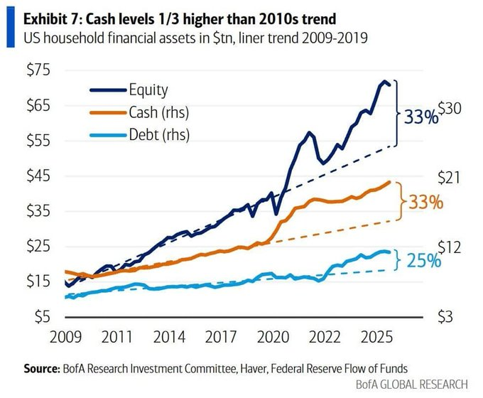
一句话核心
美国家庭的资产负债表史上最强：股票 72 万亿 + 现金 20 万亿 + 债券 11 万亿，**三项全部创历史新高，且都比长期趋势高出 25–33%。**这是美国经济韧性的根源——但这笔巨额现金到底是"待入场的弹药"还是"随时要跑的资金"，取决于经济预期。
背景与关键数据
数据来源：BofA Research Investment Committee、Haver、Federal Reserve Flow of Funds（美联储资金流量表）。
⚠️ "资金流量表（Flow of Funds，正式名称 Z.1 报告）"是什么？ 美联储每季度发布的一份统计，追踪美国所有部门（家庭、企业、政府、金融机构）的资产和负债。它是研究美国家庭财富最权威的数据源，没有之一。想认真研究美国宏观的人，应该知道这份报告的存在（免费公开，搜 "Fed Z.1"）。
核心数据：
| 资产类别 | 当前规模 | 高于 2009-2019 趋势线 | 超出幅度 |
|---|---|---|---|
| 股票（Equity） | ~72 万亿美元 | +18 万亿 | +33% |
| 现金及等价物（Cash） | ~20 万亿美元 | +5 万亿 | +33% |
| 债务证券（Debt/债券） | ~11 万亿美元 | +2.2 万亿 | +25% |
几个参照系帮你理解这些数字有多大：
- 美国 GDP 约 30 万亿美元 → 家庭持有的股票 = 2.4 倍 GDP
- 家庭现金（20 万亿）≈ 美国 GDP 的 2/3
- 20 万亿美元现金 ≈ 中国 A 股 + 港股的总市值量级
**"现金及现金等价物"包括什么？**银行存款、货币市场基金（money market funds）、短期国债（T-bills）、CD 存单。**注意：这些不是"躺着不动的死钱"——在当前利率环境下，它们能拿到 4% 左右的无风险收益。**这一点非常关键，下面会展开。
图片解读
图 1（BofA Exhibit 7: "Cash levels 1/3 higher than 2010s trend"）
副标题："US household financial assets in $tn, liner trend 2009-2019"（美国家庭金融资产，单位万亿美元，线性趋势 2009-2019）
这是一张双轴图：
- 左轴（$5 – $75）：深蓝线 = Equity（股票）
- 右轴（$3 – $30）：橙线 = Cash（现金，rhs）、浅蓝线 = Debt（债券，rhs）
- 横轴：2009 – 2025
- 每条实线旁边都有一条虚线——那是2009-2019 年的线性趋势外推（"如果一切按 2010 年代的老规矩走，今天应该在哪儿"）
- 右侧的大括号标注了实际值 vs 趋势值的差距：33% / 33% / 25%，以及趋势线的终点 $30 / $21 / $12
逐条读：
深蓝线（Equity，股票）：
- 2009 年起点约 $14 万亿（金融危机的深坑）。
- 2009–2019 沿着虚线趋势稳步爬升到约 $38 万亿。这段实线和虚线几乎重合——这就是"正常"的样子。
- 2020 年之后开始暴力偏离趋势：一路冲高，2021 年底约 $57 万亿。
- 2022 年（美联储暴力加息）出现明显回撤，跌到约 $48 万亿——这是图上唯一一次显著的下跌，也是唯一一次实线接近虚线。
- 2023 年起再度狂奔，2025 年冲到约 $72 万亿的顶点。
- 与虚线（趋势值约 $54 万亿）的差距：+$18 万亿，即 +33%。
橙线（Cash，现金，右轴）：
- 2009 年起点约 $18 万亿（右轴刻度）… 注：右轴与左轴刻度不同，橙线在图上的位置不代表绝对值大小，要看右轴。
- 2009–2019 沿趋势缓慢上升。
- 2020 年出现一个明显的跳升——这是疫情救助支票（stimulus checks）+ 强制储蓄（关在家里没法花钱）的直接结果。
- 之后持续上行，2025 年达到约 $21+ 万亿（图中标注趋势终点 $21，实际值更高）。
- 与趋势的差距：+$5 万亿，即 +33%。
浅蓝线（Debt，债券，右轴）：
- 2009 年起点约 $11 万亿（右轴）。
- 长期沿趋势缓慢爬升。
- 2022 年之后明显加速上翘——**这个时点非常关键：2022 年是美联储开始暴力加息的年份。**利率从 0 升到 5%+，债券终于有了收益率，家庭开始大举买入国债和债券基金。
- 2025 年约 $12+ 万亿，比趋势高 25%。
⚠️ 这张图最重要的、但最容易被忽略的信息：三条线是同时创新高的。
**这非常反常。**在正常的资产配置逻辑里，这三者应该是此消彼长的——你把钱买了股票，就没钱拿现金；你买了债券，就少买股票。这叫"资产配置的跷跷板"。
但 2020 年之后，跷跷板失效了——三头同时上涨。
**为什么？**只有一个解释：**分母变大了。**也就是说，美国家庭的总财富本身在暴涨（疫情期间的天量财政刺激 + 货币宽松 + 资产价格上涨的财富效应），大到可以同时把三个桶都装满。
这是理解"美国经济为什么打不死"的核心。
为什么重要 / 对市场和经济的含义
这是今天最"看多美国"的一条，也是理解 2022 年以来所有宏观预测失灵的钥匙。
1. 它解释了"为什么美国衰退一直不来"
**2022–2023 年，几乎所有华尔街策略师都预测美国会衰退。**理由充分：美联储史上最快加息、收益率曲线倒挂（最可靠的衰退指标）、通胀高企。
但衰退没有来。为什么？
因为家庭部门有 20 万亿美元的现金缓冲，和 72 万亿的股票财富。
- 加息伤害的是"负债端"——但美国家庭在 2008 年之后经历了长达十年的去杠杆（deleveraging），负债率处于低位，而且大部分房贷是 30 年固定利率（在 2020-2021 年 3% 的利率锁定了）。加息对他们的现金流几乎没有影响。
- 加息反而滋养了"资产端"——现金和短债的收益率从 0% 涨到 5%。20 万亿美元 × 4% = 每年 8000 亿美元的额外利息收入。
⚠️ 这就是本轮周期最反直觉的一点：对家庭部门而言，美联储加息可能是净利好。 高利率通常通过"提高借贷成本"来抑制经济。但如果一个部门几乎没有浮动利率负债、却持有巨额生息资产，那么加息对它来说就是净收入。
这就是所谓的"利率传导机制失灵"——美联储踩刹车，但刹车片没有接触到轮子。
"这既增强了消费和经济韧性" —— BofA 这句话的分量就在这里。
2. 但那句 "but"（转折）才是最重要的
"这既增强了消费和经济韧性，也意味着未来市场仍有潜在增量资金，但如果经济预期恶化，这些现金也可能继续停留在场外，而不会自动流入股市。"
这句话在拆解一个华尔街最常用的多头论据："场外还有天量现金等着进场（cash on the sidelines）"。
多头版本：20 万亿现金 = 20 万亿的潜在买盘 = 股市有底。
BofA 的反驳：现金不会"自动"流入股市。
为什么？两个原因：
(a) 这些现金现在有收益。在 0 利率时代，持有现金的机会成本极高（什么都不赚），所以钱被"逼"进股市——这就是当年的 **TINA（There Is No Alternative，别无选择）**逻辑。
**但在 4-5% 的利率下，TINA 死了。**现金本身就是一个可敬的资产类别——**无风险、有收益、随时可用。**为什么要冒险去买一个已经涨了 100% 的股市？
(b) 现金的"性质"取决于持有者的心态：
- 如果人们乐观 → 现金是**"待发射的弹药"**（dry powder）→ 会流入股市 → 利多。
- 如果人们悲观 → 现金是**"避风港"**（safe haven）→ 会一直躺着，甚至吸引更多资金 → 利空。
同一笔 20 万亿现金，可以是利多，也可以是利空——完全取决于风险偏好。
⚠️ 所以"场外有天量现金"这个论据本身是没有信息量的。它是一个条件性的看多因素，条件是"经济预期不恶化"。这是一个非常职业、非常克制的表述，值得学习。
3. 财富效应的双刃剑
72 万亿的股票资产 = 2.4 倍 GDP。这意味着美国家庭的财富史无前例地暴露在股市上。
上涨时：财富效应 → 消费旺盛 → 经济强劲 → 企业盈利好 → 股市继续涨。（正反馈）
下跌时：同样的机制会反向运转——股市跌 20% = 14 万亿美元财富蒸发 = 约半个美国 GDP → 消费收缩 → 经济走弱 → 盈利下滑 → 股市继续跌。（负反馈）
这就是所谓的"金融化的经济"：股市不再只是经济的"温度计"，它变成了经济的"发动机"。
这有一个极其重要的政策含义：美联储和财政部越来越"不能容忍"股市大跌——因为股市大跌会直接、迅速地传导为经济衰退。这就是"Fed Put"（美联储看跌期权）的结构性基础。
（当然，这个论断有争议。有人认为美联储的双重使命里没有"保护股市"这一条，2022 年的加息就证明了美联储愿意让股市下跌。这个观点也有道理。真相可能是：美联储不会为了股市而放弃通胀目标，但在通胀受控时，它会更倾向于呵护市场。）
4. 与帖 3（JPM 说 A 股拥挤）的对照——今天最有价值的一组对比
| 美国（帖 10） | 中国（帖 3、帖 4、帖 8） | |
|---|---|---|
| 家庭资产负债表 | 史上最强（72万亿股票 + 20万亿现金） | 财富困在房地产和存款里，房地产在贬值 |
| 现金的处境 | 有 4-5% 的无风险收益 | 存款利率持续下行，"资产荒" |
| 现金的去处 | 可以自由选择（股、债、海外） | 资本管制，出不去（帖 9） |
| 人口 | 仍在增长（靠移民） | 加速下降（帖 8） |
| 信用体系 | 稳固 | 城投信仰崩塌（帖 4） |
Jason 今天把这些帖子排在一起，可能想表达的正是这个对照。
但也要给一个平衡的视角：
- 美国的强，很大程度上建立在"资产价格高"之上——而资产价格高本身就包含了泡沫风险。72 万亿的股票资产比趋势高 33%，这个"超额"是可以蒸发的。
- **72 万亿股票 + 2.4 倍 GDP 的暴露度，也意味着美国经济对股市的脆弱性是史无前例的。**如果 AI 叙事破灭，负反馈会非常剧烈。
- 中国的"弱"也有另一面：低估值、政策空间大（利率还有下降空间、财政还有加杠杆空间）、资本管制在危机时反而是稳定器。
结论不该是简单的"美国好、中国坏"，而是"两个经济体处在完全不同的周期位置和结构位置，需要用完全不同的框架去分析。"
延伸知识
① 财富效应（Wealth Effect）—— 数量级有多大？
定义：家庭财富增加 → 感觉更有钱 → 消费增加（即使收入没变）。
实证估计（学术共识的大致量级）：
- 股票财富的边际消费倾向（MPC）≈ 3–5% —— 股票财富每增加 100 美元，年消费增加 3–5 美元。
- 房产财富的 MPC ≈ 5–8% —— 房产的财富效应比股票更强！
**为什么房产的财富效应更强？**几个原因：
- 房产财富分布更平均（中产家庭的主要资产是房子，而股票高度集中在富人手里——富人的 MPC 很低，因为他们的消费已经饱和）。
- 房产可以抵押套现（Home Equity Line of Credit，房屋净值信贷）——房价涨了，你可以直接借出来花。
- 房价上涨的感知更直观、更"真实"。
套用到今天的数据：
- 美国家庭股票财富比趋势高 18 万亿 × MPC 4% ≈ 每年额外 7200 亿美元的消费 ≈ 美国 GDP 的 2.4%。
这个数字大到足以解释"为什么衰退没来"。
反过来看中国：中国家庭的财富高度集中在房地产（估计占家庭总资产的 60-70%，远高于美国的 25-30%）。房产的 MPC 更高，意味着房价下跌对消费的打击也更狠。
⚠️ 这是理解中美消费差异最重要的一个视角：
- 美国：股票涨 → 财富效应 → 消费强。
- 中国：房价跌 → 负财富效应 → 消费弱。
**不是因为中国人"不爱消费"，而是因为他们的主要资产在贬值。**这个视角比任何"文化论"（"中国人爱储蓄"）都更有解释力。
② TINA 已死，TARA 当道
- TINA = There Is No Alternative（别无选择）—— **2009–2021 年的零利率时代。**现金零收益、债券零收益，你被迫买股票。这是那十年美股长牛的重要制度基础。
- TARA = There Are Reasonable Alternatives（有合理的替代品）—— **2022 年之后的高利率时代。**现金和短债给你 4-5% 的无风险收益。你不再"被迫"买股票。
这个转变的重要性怎么强调都不过分。
它的直接推论：股票的估值中枢应该下移。
**为什么？**因为股票的合理估值 ≈ 1 ÷ (无风险利率 + 股权风险溢价)。
- 无风险利率 = 0% 时，即使股权风险溢价 4%，合理 P/E ≈ 1/0.04 = 25 倍。
- 无风险利率 = 4.5% 时，同样的风险溢价，合理 P/E ≈ 1/0.085 = 11.8 倍。
理论上，估值应该腰斩。
但现实是：美股的 P/E 不但没跌，还创了新高。
**这个矛盾怎么解释？**几种可能（都有支持者，没有定论）：
- 市场认为 AI 会大幅提升未来盈利增速（g 上升可以抵消 r 上升）—— 多头的核心论据。
- 股权风险溢价被压缩到了历史低位（投资者不再要求那么多风险补偿）—— 这本身是一个警报。
- 市场是错的，估值终将回归。—— 空头的论据。
这是当前全球宏观最核心的争论，没有之一。你不需要马上有答案，但你应该知道这个争论的存在，以及争论的双方各自的逻辑。
③ 一个重要的补充视角：分布问题
BofA 这张图讲的是总量（aggregate），但总量掩盖了分布（distribution）。
美国家庭财富的分布极度不均：
- 最富的 10% 家庭持有约 85-90% 的股票资产。
- 最底层 50% 的家庭，几乎不持有股票，储蓄率接近零，且大量依赖信用卡债务。
所以"美国家庭有 20 万亿现金"这句话，可能同时是真的和误导的：
- 真的：总量确实有 20 万亿。
- 误导的：这些钱主要在富人手里，而富人的边际消费倾向很低。底层 50% 的家庭，可能正在经历实质性的财务压力（信用卡违约率、汽车贷款违约率在 2024-2025 年都在上升）。
⚠️ 这就是所谓的"K 型经济"——同一个经济体，富人和穷人走在完全相反的两条路上。
这个视角很重要，因为它解释了一个悖论：为什么宏观数据这么强（消费韧性、GDP 增长），但民调显示大多数美国人认为经济很糟糕？
因为宏观总量被顶部的富人拉起来了，而中位数家庭的体感是另一回事。
**在读任何"总量"数据时，永远问一句：这个总量是怎么分布的？**这是一个能让你避开很多错误结论的思维习惯。
今日全图索引
| 帖号 | 时间 | 主题 | 标签 | 图片文件 |
|---|---|---|---|---|
| 1 | 13:48 | 日本劳动力人口见顶回落，日央行正常化陷入两难 | #其他国家经济# | post1_img1.png |
| 2 | 13:54 | JPM：AI PCB 高增长，但利润集中于少数量产强者 | #A股# | post2_img1.png |
| 3 | 13:58 | JPM：中国成长/动量拥挤，估值差达 6 倍极值，建议加高股息对冲 | #A股# | post3_img1.png |
| 4 | 14:02 | 洛阳古都丽景城投违约，担保方装死，城投信仰崩塌 | #TAX# | post4_img1.png ~ post4_img8.png（8张） |
| 5 | 14:12 | 美伊第三轮互射，伊朗宣布关闭霍尔木兹海峡 | #其他国家经济# | post5_img1.png ~ post5_img4.png（4张） |
| 6 | 14:15 | 《旅游强国建设"十五五"规划》：2030 年 83 亿人次、7.7 万亿元 | #TAX# | post6_img1.png |
| 7 | 14:19 | 沙特-阿联酋 3 万亿美元裂痕，华尔街被迫选边 | #金融# | post7_img1.png ~ post7_img3.png（3张） |
| 8 | 14:31 | 李迅雷人口模型更新：2031 超老龄化，2100 年剩 4-5 亿，"被动城镇化" | #人口# | post8_img1.png ~ post8_img9.png（9张） |
| 9 | 14:37 | 韩国 2025 净移民 7.4 万腰斩；资本管制也锁住人 | #其他国家经济# | post9_img1.png |
| 10 | 14:41 | BofA：美国家庭 72 万亿股票 + 20 万亿现金，史上最强资产负债表 | #其他国家经济# | post10_img1.png |
图片总数：30 张（原图保存于 jason_images/2026-07-12/）
今日学习清单（建议记住的 8 个概念）
如果今天只带走 8 样东西，我建议是这些：
- 明斯基时刻的三级融资（对冲 → 投机 → 庞氏）—— 用它去看任何一个高负债主体（帖 4）
- 市场宽度（Breadth） —— 少数股票撑起指数，是顶部最经典的预警（帖 3）
- 财政平衡油价 —— 判断产油国"谁能扛住价格战"的关键数字（帖 7）
- 人口的惯性 —— 2050 年的老龄化今天已经锁定，鼓励生育救不了近 25 年（帖 8）
- 被动城镇化 —— 城镇化率上升 ≠ 购房需求上升。日本 77%→90% 而房价跌 20 年（帖 8）
- TINA 已死，TARA 当道 —— 4-5% 的无风险利率，重塑了一切资产的估值逻辑（帖 10）
- 财富效应的 MPC —— 股票 3-5%，房产 5-8%。解释了中美消费的分野（帖 10）
- Exit / Voice / Loyalty —— 退出成本决定了钱和人的去向（帖 9）
一个诚实的提醒
今天的帖子里，"李迅雷人口报告"（帖 8）和"洛阳城投违约"（帖 4）是最沉重的两条，也确实指向中国经济的长期结构性挑战。但在消化它们时，有几点值得保持清醒：
- 李迅雷的模型是"如果一切不变"的外推。它的价值在于警示，不在于预言。历史上几乎所有超长期人口预测都被证明有偏差——技术、政策、社会规范都可能改变（比如 AI 是否能大幅提升劳动生产率、从而部分抵消劳动力下降，这是模型没有考虑的变量）。
- **一个城投平台的违约，不等于整个体系的崩溃。**它是一个重要的信号，但从"局部违约"到"系统性危机"，中间还有很多政策和市场的缓冲层（中央转移支付、债务置换、金融机构展期）。
- **市场经常在悲观叙事最浓的时候见底。**极端的悲观本身，往往就是价格里已经反映了太多坏消息的信号（参考帖 3 那张图——"便宜组"的中位数 P/E 只有 6.3 倍）。
**跟读的价值不在于接受某一个观点，而在于建立一个能容纳多种可能性的框架。**明天见。
报告由自动化任务生成于 2026-07-12。数据来源：知识星球「南半球聊财经」星主 Jason 不跪 当日全部 10 条帖子。所有解读与延伸知识为分析性内容，不构成投资建议。